Глава 5. Операторы и среда выполнения¶
Одни и те же входные данные, только что использованные для получения одного результата, затем требуются для соседнего результата: если они по-прежнему находятся рядом с вычислительным блоком, их можно сразу использовать снова; если их уже вытеснили, придётся загрузить их заново. Программа матричного умножения должна упорядочить эти обращения и выделить подходящее пространство для входных данных и частичных сумм. Одно лишь изменение количества результатов, обрабатываемых за раз, или порядка вычисления блоков влияет и на число повторных переносов данных, и на количество задач, которые можно выполнять одновременно.
В рассматриваемом в этой главе примере матричного умножения требуется около 103 GFLOPs вычислений, а входные данные, веса и выходные данные вместе занимают 128 MiB, однако объём чтения и записи одной из блочных реализаций достигает примерно 3 GiB. Увеличение блока выходных данных позволяет многократно использовать входные данные и вдвое сократить объём чтения и записи, но потребность каждого блока в локальной памяти при этом возрастает с 24 KiB до 80 KiB. Зная эти показатели, можно определить, компенсирует ли время, сэкономленное благодаря сокращению переносов данных, потери из-за уменьшения числа одновременно выполняемых блоков.
В главе 4 были представлены вычислительная мощность ускорителя, ёмкость памяти и пропускная способность передачи данных. В этой главе рассматривается, как программа использует эти ресурсы. Реализация оператора определяет не только число умножений со сложением, но и место хранения данных, время их переноса, число повторных использований, момент освобождения и возможность прямой передачи между соседними операторами. На примере фрагмента FFN сначала объясняется, как хост инициирует вычисления и как ускоритель выполняет задачу, затем анализируются циклы и блочное разбиение матричного умножения, а также совместное использование промежуточных результатов соседними операторами. Далее рассматривается, как компилятор и среда выполнения реализуют эти оптимизации, а в завершение рассчитывается, сколько времени они позволяют сэкономить при обработке полного запроса.
Основным примером в этой главе служит FFN модели Qwen3-8B: ширина скрытого состояния \(H=4096\), промежуточная ширина FFN \(F=12288\). Сначала одновременно обрабатываются \(M=1024\) токена: 4096-мерные векторы признаков каждого токена образуют входную матрицу X, после чего вычисляется одна ветвь проекции \(C=XW\); X, W и C представлены в формате BF16, каждый элемент занимает 2 байта, а при матричном умножении накопление выполняется в FP32. M обозначает число токенов, обрабатываемых за один вызов; каждому токену соответствует одна строка входной матрицы. Эти токены могут относиться к одному фрагменту входных данных на этапе prefill либо к нескольким запросам в одном пакете; при decode одного запроса по одному токену значение M равно 1.1
| Объект | Форма | Размер | Роль в вычислении |
|---|---|---|---|
| Входная матрица X | \([1024,4096]\) | 8 MiB | Вектор признаков каждого токена занимает одну строку; после проекции получается новый вектор признаков этого токена |
| Веса W | \([4096,12288]\) | 96 MiB | Совместно используются при вычислении проекций 1024 токенов |
| Проекция C | \([1024,12288]\) | 24 MiB | В дальнейшем подвергается активации и другой обработке |
Эта глава посвящена трём вопросам: какая работа выполняется повторно, какие данные можно использовать повторно и какие вычисления или ожидания определяют общее время. При ответе на эти вопросы единицей выполнения программы на ускорителе служит kernel. Анализ объёма чтения и записи, ёмкости буферов и числа kernel позволяет понять, какой объём работы выполнила программа; однако рассчитать продолжительность её выполнения можно лишь с учётом порядка выполнения этой работы.
CPU обычно автоматически использует локальность через аппаратные кэши, тогда как kernel ускорителя часто явно выбирает блоки, буферные слоты и порядок циклов. Оба подхода решают одну задачу, но граница ответственности различается: содержимое кэша динамически выбирает аппаратура, а содержимое буфера на кристалле, время его хранения и пользователей задаёт программа. В этой главе рассматриваются и перемещения внутри оператора, и отправка задач с хоста, копирование на устройство и события синхронизации вокруг операторов. Первые определяют повторное использование данных, вторые — путь управления и момент доступности результата.
5.1 Отправка, перемещение и синхронизация при выполнении на ускорителе¶
Сначала рассмотрим умножение матриц, входные и выходные данные которого находятся в памяти CPU. CPU подготавливает входные данные, передаёт их в GPU, запускает вычисление, а затем получает результат. Этот процесс требует совместной работы двух процессоров. Понимание того, когда они работают независимо, а когда ожидают друг друга, служит основой для последующего рассмотрения слияния, конвейеризации и повторного воспроизведения графов.
5.1.1 От вызова фреймворка до kernel launch¶
PyTorch — программный фреймворк для выражения тензорных операций и организации выполнения модели. При вызове умножения матриц CPU сначала исполняет код фреймворка: считывает форму и тип данных тензоров, выбирает реализацию, подготавливает адреса и параметры, а затем через среду выполнения и драйвер отправляет задачу в GPU. Инициация одного выполнения kernel на ускорителе называется kernel launch. Среда выполнения отвечает за отправку задач, управление памятью и синхронизацию выполнения; компилятор заранее или при первом вызове генерирует код для ускорителя.
Здесь есть три уровня: оператор описывает математическую работу, например умножение матриц или активацию; kernel выполняет эту работу на ускорителе; launch — действие CPU, инициирующее это выполнение. Одно умножение матриц может выполняться несколькими kernel, а несколько поэлементных операторов — одним kernel. Поэтому можно как оптимизировать вычисления на ускорителе, так и сокращать накладные расходы на подготовку и отправку задач хостом.
При выполнении kernel CUDA запускает множество потоков. Несколько потоков образуют блок потоков (thread block), а все блоки потоков — сетку потоков (grid). При умножении матриц выходная матрица обычно делится на несколько tile, вычисляемых разными блоками потоков; потоки внутри блока совместно считывают входные данные и накапливают результат. Ускоритель размещает блоки потоков на SM со свободными ресурсами. Блоки, завершившиеся раньше, освобождают ресурсы, после чего могут запускаться следующие; поэтому блоки потоков в grid могут выполняться партиями.
Kernel launch использует асинхронную отправку. К моменту возврата из вызова CPU уже завершил отправку, а GPU выполняет работу в соответствии с очередью задач и зависимостями. CPU может сразу начать подготовку следующей задачи. Ему требуется ждать завершения соответствующей операции ускорителя только тогда, когда нужно использовать её результат или перезаписать данные, которые ускоритель ещё использует.34
Такое разделение работы образует простой конвейер: CPU подготавливает и отправляет задачи, а GPU их выполняет. Вычисление больших матриц занимает достаточно много времени, чтобы CPU успел подготовить следующий вызов; небольшие операторы завершаются быстро, поэтому GPU чаще успевает выполнить все задачи в очереди и останавливается в ожидании следующей отправки от CPU. Следовательно, ускорение возможно с двух сторон: за счёт сокращения времени ожидания хоста ускорителем и за счёт уменьшения времени выполнения самого kernel.
5.1.2 Копирование данных между хостом и ускорителем¶
CPU может заранее отправить следующую задачу, но ускоритель способен начать вычисление только после получения входных данных. Анализ процесса передачи данных позволяет понять, какую работу необходимо завершить между отправкой задачи и началом вычисления. Помимо H2D и D2H, представленных в главе 4, GPU с выделенной видеопамятью также часто копирует данные внутри неё. Распространены три направления копирования:
| Название | Направление копирования | Типичный объект |
|---|---|---|
| H2D | Память хоста → видеопамять | Входной тензор текущего batch |
| D2H | Видеопамять → память хоста | Результат вычисления, необходимый CPU |
| D2D | Видеопамять → видеопамять | Фиксированный входной буфер или результат перестановки |
Описанное выше умножение матриц выполняется так:
CPU подготавливает входные данные → H2D → GPU вычисляет → D2H → CPU использует результат.
На рис. 5-1 показано расположение этих данных в памяти с обеих сторон и направления копирования.
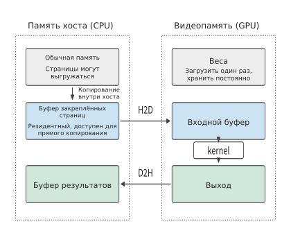
Рис. 5-1. H2D перемещает входные данные из закреплённого буфера хоста в видеопамять, а D2H возвращает результат на хост; после однократной загрузки веса остаются в видеопамяти, и kernel непосредственно считывает из неё входные данные и записывает выходные. Данные из обычной памяти необходимо сначала скопировать в закреплённый буфер, чтобы механизм копирования мог переместить их напрямую.
При выполнении полной модели передавать все данные заново при каждом вызове не требуется. После загрузки веса могут постоянно оставаться в видеопамяти, межслойные активации может непосредственно считывать следующий kernel, а KV можно продолжать использовать на последующих шагах decode. Если сэмплирование выполняется на GPU, CPU достаточно получить небольшое количество token ID. Поэтому число копирований между хостом и ускорителем не совпадает с числом чтений внутри ускорителя: веса можно передать один раз, но прочитать на ускорителе многократно.
Пример 5-1. Сколько времени занимает передача входных данных с хоста на GPU? Тензор BF16 формы \([8192,4096]\) занимает \(8192\times4096\times2=64\) MiB. RTX PRO 6000 подключена к хосту через PCIe Gen5 x16 с номинальной пропускной способностью 64 GB/s в каждом направлении,36 поэтому время передачи равно:
Если разделить входные данные на два тензора по 32 MiB, передача каждого займёт около 0,52 ms, а общий объём передаваемых данных останется прежним. Преимущество состоит в том, что первая часть данных поступит раньше: пока GPU вычисляет первую половину batch, механизм копирования продолжает передавать вторую. В разделе 5.3 будет дополнительно рассчитано общее время при перекрытии передачи и вычисления.8
На процесс копирования также влияет тип памяти хоста. Страницами обычной памяти управляет операционная система; закреплённая память (pinned memory) остаётся резидентной во время использования, благодаря чему ускоритель может перемещать данные напрямую. При передаче данных из обычной памяти среда выполнения часто сначала копирует их во внутренний закреплённый буфер: CPU выполняет одно копирование, после чего данные считывает ускоритель. Это и есть копирование внутри памяти хоста, показанное слева на рис. 5-1. Если для каждого batch копировать 64 MiB данных во вновь созданный закреплённый буфер, перед H2D появляется дополнительное копирование на хосте. Если CPU будет подготавливать входные данные непосредственно в повторно используемом закреплённом буфере, можно устранить это промежуточное копирование и повторные выделения памяти.34
5.1.3 Stream, event и порядок завершения¶
Место, куда переданы данные, определяет, какой процессор сможет их использовать; момент завершения передачи определяет, когда может начаться последующее вычисление. После возврата из асинхронного вызова копирование может ещё продолжаться, поэтому порядок выполнения должен гарантировать, что вычисление не прочитает входные данные до завершения их передачи. Stream (поток) CUDA — это последовательность задач ускорителя, выполняемых по порядку. Если поместить H2D и kernel, считывающий эти входные данные, в один stream, вычисление окажется в очереди после копирования; CPU сможет последовательно отправить обе задачи.
Если копирование и вычисление находятся в разных stream, порядок выполнения между потоками задаётся с помощью event (события). Поток копирования записывает событие после H2D, а поток вычисления ожидает его и только затем использует входные данные. Ожидание происходит в последовательности задач ускорителя в потоке вычисления, поэтому CPU может продолжать отправлять другую работу.
На рис. 5-2 два потока и два события показаны на общей временной шкале.
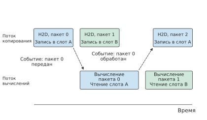
Рис. 5-2. Поток копирования последовательно передаёт входные данные каждого batch, а поток вычисления их считывает. Вычисление batch 0 должно ждать события «передача batch 0 завершена»; чтобы записать batch 2 в слот A, необходимо дождаться события «использование batch 0 завершено». Пунктирные стрелки обозначают ожидание события, а не перемещение данных. Попеременное использование двух слотов подробно рассматривается в разделе 5.3.2.
События также позволяют определить, когда буфер можно использовать повторно. Предположим, текущие входные данные копируются из буфера хоста в буферный слот A на GPU. После завершения копирования CPU может записать в буфер хоста входные данные следующего batch; слот A можно перезаписать лишь после того, как GPU завершит использование текущих входных данных. Хотя оба буфера содержат данные одного batch, повторно использовать их можно в разные моменты.
| Буфер | Последний пользователь | Последующее действие |
|---|---|---|
| Исходный буфер хоста для H2D | Считывается механизмом копирования | CPU записывает входные данные следующего batch |
| Входной буфер GPU | Kernel, считывающий эти входные данные | Механизм копирования записывает входные данные следующего batch |
| Исходный буфер ускорителя для D2H | Считывается механизмом копирования | GPU записывает новый результат |
| Целевой буфер хоста для D2H | Записывается механизмом копирования | CPU считывает текущий результат |
Следовательно, событие следует записывать после последнего чтения или записи, а следующая операция, использующая этот буфер, должна ожидать данного события. Когда CPU требуется результат D2H, он может ждать соответствующего события, не останавливая другие независимые задачи ускорителя. Двойная буферизация из раздела 5.3 как раз чередует две такие последовательности использования.
Этот порядок также объясняет, почему программа может полностью остановиться. Каждое ожидание относится к конкретному событию, и если оно так и не будет записано, ожидание не завершится; внешне это выглядит как остановка программы, а не как замедление. Последние пользователи четырёх буферов в таблице выше соответствуют четырём событиям, которые легко забыть записать: если пропустить событие «использование завершено» для входного буфера GPU, механизм копирования никогда не сможет записать следующий batch. Аналогично действует циклическое ожидание между потоками: поток A ожидает события, записываемого потоком B, но соответствующая задача потока B стоит в очереди после ещё не завершённой работы потока A, поэтому оба потока не могут продвинуться. При выполнении на нескольких ускорителях появляется ещё одна причина: коллективная коммуникация требует, чтобы каждая участвующая карта инициировала один и тот же вызов. Если хотя бы одна карта пропустит вызов, остальные будут бесконечно ждать участника, который так и не появится (раздел 6.4).
При диагностике сначала проверьте, продолжает ли работу сторона, события которой ожидают: если результаты всё ещё появляются, выполнение лишь замедлилось и следует вернуться к временной шкале из раздела 5.1.4, измерив длительность каждого участка; если движение полностью прекратилось, программа действительно ожидает событие, которое никогда не наступит. Медленный узел из раздела 10.4.5 относится к первому случаю. Тайм-аут ожидания и вывод после его истечения всех незавершённых задач каждого потока позволяют определить, какого именно события не хватает.
5.1.4 От времени отправки до момента готовности результата¶
Определить момент готовности результата можно только после объединения порядка копирования, вычисления и использования буферов. На рис. 5-3 эта последовательность представлена как временная шкала.
Пример 5-2. Почему время отправки, время работы ускорителя и полное время вызова различаются? Входные данные уже подготовлены на хосте. CPU отправляет все задачи в течение 0–3 μs, первая задача ускорителя начинается на отметке 3 μs; H2D, kernel и D2H занимают соответственно 8, 20 и 4 μs и последовательно выполняются ускорителем в соответствии с зависимостями.
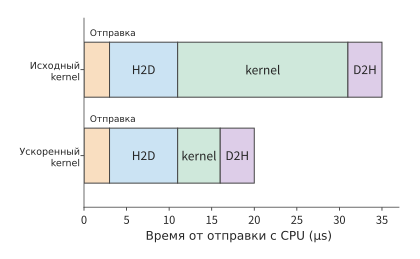
Рис. 5-3. Последовательно выполняются отправка задач CPU, копирование входных данных H2D, выполнение kernel и возврат результата D2H. Вверху kernel выполняется 20 μs, и результат становится доступен на отметке 35 μs; внизу kernel выполняется 5 μs, и результат становится доступен на отметке 20 μs.
CPU тратит на отправку задач 3 μs, kernel выполняется 20 μs, а использовать результат CPU может лишь на отметке 35 μs. Если сократить время выполнения kernel с 20 до 5 μs, результат станет доступен через \(3+8+5+4=20\) μs. Kernel ускорится в четыре раза, но полное время выполнения сократится с 35 до 20 μs, то есть лишь примерно в 1,8 раза; оставшиеся 15 μs приходятся на отправку и копирование.
Три вида времени из примера 5-2 соответствуют трём способам размещения точек измерения. Результат зависит от того, где начинается и заканчивается измерение. Если считать показания часов CPU до и после асинхронного вызова, будет измерено время отправки; если перед завершением измерения дождаться результата, будет измерено время от инициации до завершения. CUDA event отмечает начальную и конечную позиции в последовательности задач ускорителя и измеряет время выполнения этого участка на ускорителе. Инструмент анализа производительности (profiler) отображает вызовы хоста, вычисления ускорителя и копирование на общей временной шкале, позволяя отдельно увидеть постановку в очередь, ожидание зависимостей и выполнение после отправки.
Временная шкала на рис. 5-3 начинается с момента готовности входных данных. Если программа ещё не скомпилирована, перед ней нужно добавить однократную подготовительную работу: первый вызов может потребовать компиляции кода или выделения рабочего пространства. Предположим, первая компиляция занимает 100 ms, а каждое последующее выполнение — 1 ms. Тогда один вызов займёт в общей сложности 101 ms, а 100 вызовов — 200 ms, в среднем по 2 ms на вызов. Чем больше вызовов, тем меньше средняя доля времени компиляции, тогда как 1 ms, необходимая для каждого выполнения, остаётся неизменной. В разделе 5.5 тем же способом будет определено, сколько раз должны повторяться бакетизация (дополнение входных данных до одного из небольшого числа репрезентативных размеров) и специализация (генерация отдельной программы для конкретной формы), чтобы окупить затраты.
5.1.5 Как один kernel выполняется на SM¶
На рис. 5-3 kernel показан как единый отрезок длительностью 20 μs; возможность сократить его до 5 μs зависит от того, что происходит на SM в течение этого времени. В этом разделе зафиксируем один kernel и разберём его выполнение на одном SM в пять этапов: потоки, резидентность, обращения к памяти, матричные инструкции и синхронизация. В качестве kernel возьмём блок умножения со сложением из раздела 4.3.2: выходной блок размером 128×128 и шаг 64 по K; блоки A и W в BF16 занимают по 16 KiB, аккумулятор FP32 — 64 KiB. Все три размещаются в общей памяти и образуют рабочий набор (данные, которые во время вычисления должны одновременно находиться в локальном хранилище) общим объёмом 96 KiB. Один блок потоков, включающий 256 потоков, отвечает за один выходной блок. В качестве аппаратуры возьмём один SM H100: одновременно на нём могут быть резидентны не более 2048 потоков (то есть 64 warp; warp объясняется ниже) и 32 блоков потоков; доступно 64K регистров (по 32 бита каждый) и 228 KB общей памяти (в обозначениях документации CUDA, то есть 233,472 bytes). Kernel использует 128 регистров на поток, каждая инструкция загрузки получает по 16 bytes на поток, каждый warp может иметь не более четырёх незавершённых загрузок, форма матричной инструкции равна 16×8×16, а задержка видеопамяти принимается равной 600 ns.33
Warp: 32 потока, инструкции для которых выдаются совместно. SM выдаёт инструкции не отдельным потокам, а группам по 32 потока; такая группа называется warp. Все 32 потока одного warp выполняют одну инструкцию, обрабатывая разные данные; поэтому одна инструкция загрузки сразу формирует 32 адреса. Блок из 256 потоков содержит 8 warp. Упомянутые в разделе 5.2.3 при анализе bank общей памяти (независимо обслуживающих запросы разделов общей памяти) 32 lane — это 32 потока одного warp: количество bank, на которые попадают одновременно сформированные ими 32 адреса, определяет число циклов использования интерфейса общей памяти этой инструкцией.
Резидентность и заполнение. Чтобы блок потоков был резидентен на SM, то есть оставался на нём и мог быть запланирован к выполнению в любой момент, ему должны одновременно выделяться слоты потоков (по одному на поток), регистры и общая память. Число блоков потоков, которое позволяет разместить каждый вид ресурсов, равно округлённому вниз отношению общего объёма ресурса к потребности одного блока; число резидентных блоков определяется минимумом среди всех видов ресурсов:
| Ресурс | Общий объём SM | Потребность одного блока потоков | Допустимое число блоков потоков |
|---|---|---|---|
| Слоты потоков | 2048 | 256 | 8 |
| Регистры | 64K | 256 × 128 = 32K | 2 |
| Общая память | 228 KB (233,472 bytes) | Рабочий набор 96 KiB + резерв 1 KiB на блок = 97 KiB | 2 |
| Предельное число блоков потоков | 32 | 1 | 32 |
И регистры, и общая память допускают только 2 блока, поэтому на SM резидентны 2 блока потоков, то есть 16 warp. Заполнение (occupancy) — отношение числа резидентных warp к максимальному числу резидентных warp на SM; здесь оно равно 16/64 = 25%. На рис. 5-4 три вида ресурсов представлены тремя горизонтальными полосами: два блока потоков полностью занимают регистры и заполняют общую память, оставляя лишь 34 KiB, тогда как слоты потоков используются только на четверть.
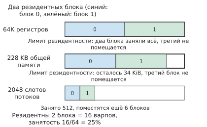
Рис. 5-4. Три полосы соответствуют общему объёму регистров, общей памяти и слотов потоков SM; синим и зелёным показаны доли двух резидентных блоков потоков. Регистры заполнены полностью, а оставшихся 34 KiB общей памяти недостаточно для третьего блока, которому требуется 97 KiB, поэтому резидентность одновременно ограничивают оба ресурса; из слотов потоков использовано лишь 512. Каждый блок содержит 256 потоков, каждый поток использует 128 регистров, а блок — 96 KiB общей памяти и ещё 1 KiB резерва.
Полезность изменения того или иного ресурса зависит от наиболее строгого ограничения. Если перенести аккумулятор объёмом 64 KiB из общей памяти в регистры, каждому потоку потребуется дополнительно хранить 64 значения FP32, то есть использовать ещё 64 регистра. Потребность блока в общей памяти снизится до 32 KiB, что позволит разместить 6 блоков; однако если ранее каждый поток использовал только 64 регистра, то вместе с аккумулятором получится 128, и регистры по-прежнему допустят лишь 2 блока. Число резидентных блоков не изменится: вместо двух ограничивающих ресурсов останутся только регистры. Чтобы сделать резидентным третий блок, необходимо одновременно сократить число регистров на поток и объём общей памяти на блок либо уменьшить рабочий набор блока.
Скрытие задержки: резидентные warp обеспечивают запросы в полёте. Заполнение важно потому, что все независимые запросы к памяти исходят от резидентных warp: если запросов в полёте достаточно, то во время ожидания ответа на один запрос интерфейс остаётся полностью занят остальными — это называется скрытием задержки. Закон Литтла из раздела 4.3.3 определяет объём данных в полёте, необходимый для поддержания пропускной способности: пропускная способность × задержка. При пропускной способности видеопамяти H100 3,35 TB/s и задержке 600 ns всей карте требуется около 2,01 MB данных в полёте, или примерно 15,2 KB на каждый из 132 SM. Теперь рассчитаем объём, обеспечиваемый резидентными warp: одна инструкция загрузки одного warp получает по 16 bytes для каждого из 32 потоков, то есть 512 bytes; каждый warp может иметь не более четырёх незавершённых загрузок; суммарно 16 warp дают 32 KiB.
Доступный объём данных в полёте в 2,15 раза превышает требуемый; достаточно даже 8 резидентных warp, то есть одного блока потоков. В разделе 5.2.2 встретится явление, при котором «большой блок считывает меньше данных, но может работать медленнее»; здесь приведена его количественная формулировка: чем больше рабочий набор, тем меньше резидентных блоков и доступный объём данных в полёте. Как только он становится меньше требуемого, эффективная пропускная способность снижается до отношения доступного объёма данных в полёте к задержке, и более высокая пропускная способность интерфейса уже не может быть использована.
Гранулярность матричных инструкций. В разделе 4.2.1 показано, что матричные модули выполняют операции над блоками фиксированной формы. Здесь одна инструкция умножения матриц со сложением (MMA) имеет форму 16×8×16: фрагмент A размером 16×16 и фрагмент W размером 16×8; одна инструкция выполняет 2×16×8×16 = 4096 операций с плавающей точкой. Для блока 128×128×64 требуется выдать (128/16) × (128/8) × (64/16) = 8 × 16 × 4 = 512 инструкций, что соответствует 2,097,152 FLOPs этого блока. Эти 512 инструкций поровну распределяются между 8 warp: выходной блок содержит 8 × 16 = 128 выходных фрагментов размером 16×8, каждый warp отвечает за 16 из них и выдаёт в общей сложности 64 инструкции за четыре шага по K. Инструкции MMA накапливают значения в регистрах, но блок из этого раздела хранит накопленный результат в общей памяти, поэтому до и после каждого шага по K необходимо перемещать эти 16 фрагментов между регистрами и общей памятью. Именно это перемещение устраняет описанный выше перенос аккумулятора в регистры.
Инструкции MMA можно выдавать двумя способами. Инструкция уровня warp выдаётся одним warp, а операнды предварительно загружаются в регистры этого warp. Инструкция уровня warpgroup в Hopper выдаётся совместно четырьмя соседними warp, вместе называемыми warpgroup; она может напрямую получать операнды из общей памяти и выполняется асинхронно: выдавшие её warp могут заниматься другой работой, ожидая результат. Именно такие инструкции FlashAttention-3 использует для организации перекрывающихся вычислений.10
Синхронизация: асинхронное копирование и барьеры. В разделе 4.4.2 два входных слота позволяют перекрыть загрузку и вычисление при условии, что известны два момента: «слот заполнен» и «слот освобождён». На SM эти моменты отмечаются барьерами (barrier). Барьер — счётчик в общей памяти: участники достигают барьера после завершения своего этапа, а когда счётчик достигает заданного значения, ожидающие на барьере потоки освобождаются. Асинхронное копирование, которое после инициации выполняется аппаратно в фоне и не требует ожидания со стороны инициатора, по завершении также достигает барьера и увеличивает счётчик на число перенесённых байтов. Каждому слоту соответствует пара барьеров: барьер «заполнен» срабатывает после завершения копирования, и его ожидает вычисление; барьер «свободен» срабатывает после завершения вычисления, и его ожидает следующее копирование. Такой барьер действует только внутри одного SM, а однократное освобождение занимает лишь несколько десятков тактов; передача между SM должна проходить через L2 и стоит на один-два порядка дороже, см. раздел 4.4.4.
Барьеры позволяют разделить обязанности между warp: один warp только инициирует копирование (производитель), а остальные только вычисляют (потребители). Такая организация называется warp specialization. После инициации копирования блока j+1 warp-производитель не обязан ждать его завершения: он переходит к ожиданию барьера «свободен», чтобы подготовиться к записи блока j+2; warp-потребители после каждого срабатывания барьера «заполнен» начинают вычисление следующего блока.
Сначала рассчитаем длительность копирования и вычисления. Разделим пропускную способность видеопамяти H100 3,35 TB/s и пиковую производительность плотных матричных вычислений BF16 989,4 TFLOP/s между 132 SM: на каждый SM приходится примерно 25,4 GB/s и 7,50 TFLOP/s. Ниже вычисления выполняются в предположении, что данный блок потоков единолично использует долю этого SM. Блоки A и W одного шага по K суммарно занимают 32 KiB, и их копирование требует около 1,29 μs; умножение блока составляет 2,097,152 FLOPs и требует около 0,28 μs. Копирование примерно в 4,6 раза медленнее вычисления, поскольку на каждый перемещённый byte в этом блоке приходится только 64 операции с плавающей точкой, тогда как отношение пиковой матричной производительности H100 к пропускной способности видеопамяти составляет около 295 FLOP/byte. На рис. 5-5 с использованием этих двух значений времени показаны четыре блока K в двух слотах.
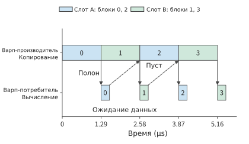
Рис. 5-5. В верхней строке показано асинхронное копирование, инициируемое warp-производителем, в нижней — вычисления warp-потребителей; синий и зелёный цвета соответствуют слотам A и B. Сплошные стрелки обозначают барьеры «заполнен»: вычисление может начаться только после завершения копирования; пунктирные стрелки обозначают барьеры «свободен»: блок 0 освобождает слот A на отметке 1,57 μs, но копирование блока 2 начинается только на отметке 2,58 μs — производителю не приходится ждать слот. На одном SM H100 копирование каждого блока занимает 1,29 μs, а вычисление — 0,28 μs; копирования следуют одно за другим, а потребители после вычисления каждого блока ожидают очередного барьера «заполнен».
Такое разделение работы представляет собой программную реализацию конвейера из раздела 4.2.3. Там тремя видами ресурсов были матричные модули, интерфейс общей памяти и экспоненциальные модули; здесь warp-производитель управляет копированием и использует интерфейс общей памяти, warp-потребители управляют матричными и экспоненциальными вычислениями, а барьеры заставляют обе стороны ждать только в точках передачи данных. FlashAttention-3 построен по этой схеме: warpgroup-производитель инициирует копирование блоков K и V, а два warpgroup-потребителя попеременно выполняют умножение матриц и Softmax; пока один вычисляет экспоненту, другой умножает матрицы. В разделе 5.3.2 значения 1,29 μs на копирование и 0,28 μs на вычисление блока будут использованы для вывода общего времени конвейера, а в разделе 5.3.3 будет подробно рассмотрено разбиение FlashAttention на блоки.10
Асинхронное пакетное копирование предъявляет ещё одно требование к расположению данных. В разделе 5.2.3 для распределения обращений по bank в конец каждой строки будет добавлено одно слово с помощью padding; асинхронное пакетное копирование перемещает целый блок по дескриптору тензора — структуре, содержащей форму и шаги тензора, — и не может вставлять заполнение между строками. Поэтому вместо этого адреса внутри блока переставляются по фиксированному правилу; такой приём называется swizzle: общий объём данных не меняется, а запросы одного столбца по-прежнему попадают в разные bank.
Соответствие Ascend. Пять рассмотренных в этом разделе этапов — потоки, резидентность, обращения к памяти, матричные инструкции и синхронизация — на Ascend соответствуют другому набору компонентов из разделов 4.2.3 и 4.6.2:
| Механизм из этого раздела | NVIDIA GPU | Ascend |
|---|---|---|
| Выдача инструкций и разделение работы | Warp — единица выдачи инструкций для 32 потоков; warp-производители и warp-потребители разделяют работу внутри одного SM | AIC и AIV — отдельные ядра, а не warp: матричная работа выполняется на AIC, векторная — на AIV; у каждого свой поток инструкций |
| Резидентность и ёмкость | Регистры, общая память и слоты потоков определяют число резидентных блоков потоков на каждом SM | Ёмкость L0, L1 и унифицированного буфера определяет размер блоков, одновременно размещаемых на каждом ядре |
| Перемещение и синхронизация | Асинхронное копирование достигает барьера, warp ожидают барьер | Данные перемещаются с помощью MTE/NDDMA, а BufferID идентифицирует буферы и организует их передачу |
Сделанный выше вывод о «достаточном объёме данных в полёте» основан на задержке 600 ns и четырёх незавершённых загрузках на warp. Условие смены результата: если задержка возрастёт до 1000 ns, а каждый warp сможет иметь только две незавершённые загрузки, каждому SM потребуется 25,4 KB данных в полёте, тогда как 16 warp смогут обеспечить лишь 16 KiB. Коэффициент покрытия, то есть отношение доступного объёма данных в полёте к требуемому, снизится до 0,65; для устранения дефицита потребуется как минимум 25 warp, то есть 4 блока потоков, однако регистры и общая память допускают лишь 2 блока. В таком случае заполнения 25% уже недостаточно: необходимо либо уменьшить рабочий набор, чтобы получить больше резидентных блоков, либо перейти на асинхронное пакетное копирование, при котором один поток запрашивает целый блок данных, а объём данных в полёте определяется размером блока и больше не зависит от числа warp.
Упражнение 5-1 · Расширение: какой ресурс определяет заполнение при уменьшении выходного блока до 64×64
Сохранив 256 потоков и 128 регистров на поток, измените размер выходного блока на 64×64, оставьте шаг по K равным 64 и продолжайте хранить аккумулятор в общей памяти. Рассчитайте потребность одного блока в общей памяти, допустимое число блоков потоков для каждого из четырёх видов ресурсов и заполнение; укажите наиболее строгое ограничение. Затем уменьшите число регистров на поток до 64 и пересчитайте результат, объяснив, на какой ресурс переместилось ограничение. Наконец, при задержке 600 ns и четырёх загрузках на warp проверьте, по-прежнему ли объём данных в полёте покрывает потребность.
5.2 Разбиение отдельного оператора на блоки, размещение данных и фактический доступ к памяти¶
Вычисления с большими матрицами можно разбивать на блоки, как режут тофу: сначала разделить их на небольшие части, удобные для обработки, а затем вычислить каждую часть по очереди. Однако при выборе формы блоков необходимо учитывать и то, какие данные способны обрабатывать вычислительные блоки, и то, сколько данных помещается в ближайшей к ним памяти. В главе 4 уже было показано, что аппаратные матричные инструкции поддерживают ограниченный набор форм; множество вычислительных блоков всего ускорителя может одновременно обрабатывать множество блоков данных, но внутри каждой задачи работу всё равно необходимо организовать в небольшие шаги, которые способно выполнить оборудование.
Разбиение на блоки также должно позволять многократно использовать загруженные данные. Если продолжить аналогию с рабочим столом из главы 4, текущие входные данные и ещё не завершённые частичные результаты должны находиться рядом с вычислительным блоком и освобождать место только после использования. Если выходной блок слишком мал, одни и те же входные данные может потребоваться многократно переносить для разных выходных блоков; если он слишком велик, он займёт больше локальной памяти и вытеснит другие задачи, которые могли бы выполняться одновременно. Сначала проследим, какие данные нужны для одного выходного значения, затем объединим несколько выходных значений в блоки и разберём, как размер блока, порядок доступа и объём локальной памяти совместно влияют на повторное использование данных.
5.2.1 Форма матриц и повторное чтение¶
Ниже A обозначает вход X из начала главы, а проекция записывается как \(C=AW\), где \(M=1024,K=4096,N=12288\). Матрицы A, W и C хранятся в BF16 и занимают соответственно 8, 96 и 24 MiB. Если A и W прочитать по одному разу, а C записать один раз, потребуется передать всего 128 MiB. Чтобы объяснить, почему одна из реализаций с разбиением на блоки создаёт около 3 GiB обращений к памяти, сначала рассмотрим вычисление одного выходного значения.
При вычислении C[i,j] берутся строка i матрицы A и столбец j матрицы W, соответствующие элементы перемножаются, а затем суммируются вдоль измерения K. При следующем вычислении C[i,j+1] справа используется соседний столбец W, но строка A остаётся той же. Синие области двух вычислений на рисунке полностью совпадают.
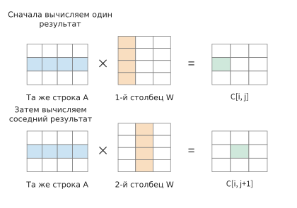
Рисунок 5-6. Сначала вычисляется одно выходное значение, затем соседнее. Синим показана используемая строка A, оранжевым — используемый столбец W, зелёным — полученный на этом шаге выходной элемент. Для наглядности матрицы на рисунке уменьшены; в фактическом примере K равно 4096.
Если между двумя использованиями эта строка A остаётся в локальной памяти или кэше, её можно использовать повторно; если она уже была вытеснена, данные потребуется снова запросить со следующего уровня памяти. При переходе к следующей строке выходных данных повторно используются и элементы W. Математическая операция многократно использует одни и те же данные. От порядка выполнения операций в программе зависит, сколько раз эти данные пройдут через интерфейс памяти.
В этом разделе подсчёт ведётся на интерфейсе между рабочим буфером и следующим уровнем памяти: суммируется число байтов при каждом чтении и записи программы. Указанный ниже объём обращений около 3 GiB также рассчитан для этого интерфейса.2
Если записать поэлементное вычисление с рисунка в виде циклов, получится:
for i in range(M):
for j in range(N):
acc = 0.0
for k in range(K):
acc += A[i, k] * W[k, j]
C[i, j] = acc
После каждого полного выполнения внутреннего цикла k получается одно выходное значение. Одна операция умножения со сложением считается за два FLOP, поэтому для вычисления всех выходных значений требуется:
Базой для сравнения служит объём чтения и записи, при котором каждая из трёх матриц BF16 проходит через интерфейс один раз:
Здесь MiB равен \(2^{20}\) bytes. В качестве базового случая принимается однократное чтение каждого входа и однократная запись выхода; далее относительно него рассчитывается дополнительный объём повторных обращений, вызванный разбиением на блоки.
Порядок циклов также определяет адрес каждого обращения. Если W хранится непрерывно по строкам, внутренний цикл выше последовательно читает W[k,j], W[k+1,j], а адреса различаются на N элементов. Если изменить порядок на i, k, j, внутренний цикл будет последовательно читать W[k,j], W[k,j+1], одновременно используя A[i,k] для нескольких выходных значений. Тогда данные, полученные одной непрерывной передачей, можно сразу использовать в вычислении.
Однако при новом порядке необходимо одновременно хранить и результаты накопления для некоторого числа выходных значений. Если локальная память не вмещает эти результаты, каждое обновление может потребовать дополнительных операций чтения и записи на следующем уровне памяти. Далее с помощью разбиения на блоки мы ограничим объём одновременно хранимых данных, согласовав повторное использование входов с хранением выходов.
5.2.2 Повторное использование блоков при ограниченной ёмкости¶
Сначала выберем небольшой блок C в качестве текущего выходного блока и выделим буфер накопления для этого блока размером \(m\times n\). На каждом шаге вдоль измерения K считывается пара входных блоков: блок A размером \(m\times k\) и блок W размером \(k\times n\). Их произведение обновляет один и тот же выходной аккумулятор; при загрузке следующей пары входных блоков уже полученная частичная сумма сохраняется. Только после завершения всего накопления вдоль K результат преобразуется в BF16 и записывается. Эти блоки программно организуются для повторного использования данных, а внутри могут дополнительно разбиваться на несколько аппаратных матричных инструкций. Само разбиение на блоки не требует предварительно копировать исходные матрицы во множество независимых малых матриц: конкретные перемещения данных определяет исполняющая программа.
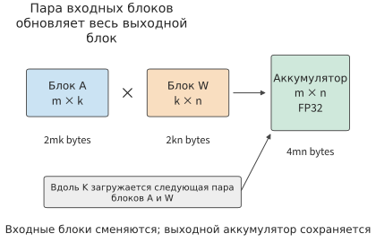
Рисунок 5-7. Текущий выходной блок m×n фиксируется, а соответствующие блоки A и W последовательно загружаются вдоль K и многократно обновляют одну и ту же частичную сумму; результат записывается обратно только после завершения всего накопления. Входы A и W представлены в BF16, аккумулятор — в FP32. На рисунке показано программное разбиение на блоки: одно блочное умножение может включать несколько аппаратных матричных инструкций; обозначения размеров указывают форму, а площади прямоугольников не масштабированы по числу байтов.
Каждый элемент блока A можно использовать для n столбцов выходных данных, а каждый элемент блока W — для m строк. Увеличение выходного блока позволяет задействовать однократно прочитанные данные в большем числе умножений со сложением, но одновременно требует хранить больше входных данных и выходных частичных сумм.
Пример 5-3. Насколько увеличение выходного блока матрицы сокращает чтение входных данных? Показанные на рисунке входной блок A, блок весов W и выходной аккумулятор занимают соответственно \(2mk\), \(2kn\) и \(4mn\) bytes. При использовании одного набора входных буферов требуется следующий объём локальной памяти:
Пусть \(k=32\). Сначала возьмём выходной блок 64×64. Блоки A и W занимают по 4 KiB, аккумулятор — 16 KiB, итого 24 KiB. После увеличения выходного блока до 128×128 каждый из двух входных блоков занимает 8 KiB, аккумулятор — 64 KiB, а общий объём возрастает до 80 KiB. Повторное использование входов увеличивается, но выходной аккумулятор растёт ещё быстрее.
Теперь рассчитаем чтение и запись для всей матрицы. Предположим, что каждый выходной блок независимо читает собственные входные данные, без учёта повторного использования кэша между разными выходными блоками. В направлении N имеется N/n блоков столбцов, и каждый из них должен полностью пройти по A; в направлении M имеется M/m блоков строк, и каждый из них должен полностью пройти по W. Матрица C в итоге записывается только один раз, поэтому:
При выходном блоке 64×64 выход разбивается на 16 блоков строк и 192 блока столбцов. Каждый из 192 блоков столбцов один раз читает матрицу A размером 8 MiB, что даёт 1536 MiB; каждый из 16 блоков строк один раз читает матрицу W размером 96 MiB — также 1536 MiB. Вместе с 24 MiB выходных данных общий объём составляет 3096 MiB. Отсюда и берутся упомянутые в начале раздела примерно 3 GiB.
После перехода к блокам 128×128 число блоков строк сокращается с 16 до 8, а число блоков столбцов — со 192 до 96, поэтому объём чтения каждого из двух входов уменьшается вдвое. Размер выхода не меняется, и общий объём снижается до \(768+768+24=1560\) MiB. На рисунке 5-8 этот выигрыш сопоставлен с объёмом занятой локальной памяти.
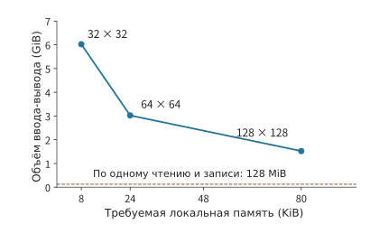
Рисунок 5-8. Каждая точка соответствует форме выходного блока. Увеличение выходного блока сокращает повторное чтение через интерфейс, но требует больше локальной памяти. Пунктирная линия показывает 128 MiB, соответствующие однократному прохождению трёх матриц; условия сравнения: k=32, один набор входных буферов, каждый выходной блок независимо читает входные данные.
Полные значения приведены ниже. Арифметическая интенсивность рассчитывается как отношение числа FLOP того же матричного умножения к указанному числу байтов, прошедших через интерфейс:
| Выходной блок | Требуемая локальная память | Обращения между рабочим буфером и следующим уровнем памяти | Арифметическая интенсивность |
|---|---|---|---|
| 32×32 | 8 KiB | 6168 MiB | 15.9 FLOP/byte |
| 64×64 | 24 KiB | 3096 MiB | 31.7 FLOP/byte |
| 128×128 | 80 KiB | 1560 MiB | 63.0 FLOP/byte |
Арифметическая интенсивность всех трёх выходных блоков намного ниже приведённого в разделе 5.1.5 отношения пиковой производительности матричных блоков H100 к пропускной способности видеопамяти, равного 295 FLOP/byte. Если учитывать только трафик на этом уровне интерфейса, все три варианта разбиения находятся в области ограничения пропускной способностью, а верхняя граница MFU матричных блоков составляет соответственно лишь 5%, 11% и 21%. Увеличение выходного блока сдвигает арифметическую интенсивность к точке пересечения, но одного разбиения на этом уровне недостаточно, чтобы её преодолеть: оставшееся повторное использование должны обеспечивать уровни памяти, расположенные ближе к вычислительным блокам.
Даже если объём обращений сокращается почти вдвое, время не обязательно уменьшится вдвое: это зависит от того, сколько задач ускоритель способен выполнять одновременно. На GPU входные буферы размещаются в общей памяти, а аккумуляторы — в общей памяти или регистрах. Здесь используется тот же подход, что и в разделе 5.1.5: каждый блок потоков отвечает за один выходной блок, а входные буферы и аккумуляторы размещаются в общей памяти. В качестве оборудования рассматривается один SM RTX PRO 6000: эта карта относится к compute capability 12.x, предел общей памяти на SM равен 100 KB, то есть 102,400 bytes, а каждый блок потоков дополнительно занимает 1 KiB резерва.37
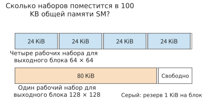
Рисунок 5-9. Полная длина каждой полосы соответствует 100 KB общей памяти одного SM RTX PRO 6000. Ровно четыре рабочих набора по 24 KiB помещаются вместе с резервом 1 KiB на каждый блок; рабочий набор размером 80 KiB помещается только в одном экземпляре.
Одновременно резидентные блоки потоков могут чередовать запросы к памяти: пока одни блоки ожидают данные, другие продолжают работу. Если число одновременно резидентных рабочих наборов сокращается с четырёх до одного, уменьшается и объём других вычислений, которые можно выполнять во время ожидания памяти. Поэтому большой блок, хотя и читает меньше данных, фактически может получить меньшую пропускную способность. В разделе 5.1.5 это уже было рассчитано: резидентные warp обеспечивают запросы к памяти в полёте, а если объём байтов в полёте недостаточен, эффективная пропускная способность оказывается ниже пропускной способности интерфейса.
Предположим, что обе реализации ограничены пропускной способностью этого уровня, а их эффективная пропускная способность равна соответственно \(B_{64}\) и \(B_{128}\). Тогда:
Если пропускная способность одинакова, время сокращается почти вдвое; если большой блок получает лишь 40% прежней пропускной способности, отношение времени составит примерно \(0.504/0.4=1.26\), то есть выполнение, наоборот, замедлится примерно на 26%. Сначала по ограничению ёмкости можно исключить варианты, которые не помещаются, затем по объёму обращений сузить область сравнения и наконец измерить фактическую эффективность выполнения. В разделе 5.4 этот процесс будет поручен компилятору.
5.2.3 Размещение данных: распределение параллельных запросов по разным bank¶
В предыдущем подразделе большой блок, несмотря на меньший объём чтения, мог замедлиться из-за снижения параллелизма. Параллелизм зависит не только от числа резидентных блоков потоков, но и от того, могут ли одновременно обслуживаться создаваемые этими потоками запросы на чтение. Сначала рассмотрим размещение данных в локальной памяти. Возьмём временный блок FP32 размером 32×32, локальная память которого разделена на 32 bank; каждый bank за один раунд выдаёт одно 32-bit слово, а номер bank равен адресу слова по модулю 32. В разделе 5.1.5 уже говорилось, что 32 потока одного warp образуют 32 lane. Когда все 32 lane читают по одному слову из одной строки, запросы распределяются по 32 bank; при чтении столбца шаг между строками равен 32 словам, поэтому все адреса попадают в один bank и требуют 32 раунда.
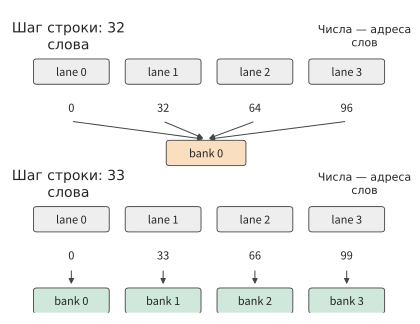
Рисунок 5-10. Тридцать два разных слова одного столбца одновременно запрашиваются 32 lane. В верхней части шаг строки равен 32 словам, поэтому запросы сосредоточены в одном bank; в нижней части шаг дополнен до 33 слов, и запросы распределяются по 32 bank. На рисунке показаны первые четыре запроса; предполагается, что каждый bank за один раунд выдаёт одно 32-bit слово, без учёта широковещательной передачи.
Если добавить в конец каждой строки одно слово, шаг строки станет равен 33. Тогда номера bank соседних строк одного столбца последовательно увеличиваются на единицу, и 32 запроса распределяются по 32 bank, поэтому их можно выполнить за один раунд. Занимаемый объём возрастает с 4096 bytes до 4224 bytes, то есть примерно на 3.1%. Полезные данные и число операций чтения не меняются, но чтение столбца, прежде требовавшее 32 раунда, теперь завершается за один.
Добавленное в конец строки слово и есть padding. Оно не изменяет само вычисление, а лишь распределяет существующие параллельные запросы по разным bank.
Padding обеспечивает распределение запросов ценой дополнительных байтов. Можно не увеличивать объём, а лишь изменить места хранения: поместить элемент строки \(r\) и столбца \(c\) в столбец \(c\oplus r\), где \(\oplus\) — побитовое исключающее ИЛИ. Шаг строки по-прежнему равен 32 словам, но при чтении столбца 32 lane получают номера столбцов \(c\oplus r\), которые при изменении \(r\) принимают 32 разных значения, поэтому номера bank также различаются и чтение завершается за один раунд. Библиотека шаблонов матричного умножения NVIDIA CUTLASS называет такое изменение мест хранения swizzle. Swizzle экономит место, требуемое для дополнения, но при каждом обращении сначала приходится вычислять номер столбца по формуле.
5.2.4 Выбор измерения для разбиения: параллельные задачи и частичные суммы¶
Padding решает вопрос одновременного обслуживания запросов. Если программа изначально создаёт лишь небольшое число задач, одного изменения размещения адресов недостаточно — вычисление также необходимо разделить. Рассмотрим RMSNorm: сначала по среднему квадратов элементов строки вычисляется общий коэффициент масштабирования, а затем масштабируется вся строка. Вычисление коэффициента масштабирования является редукцией: он получается из суммы квадратов всей строки; после этого каждый элемент умножается на этот коэффициент и соответствующий обучаемый параметр gamma. Для входа BF16 формы \([1024,4096]\) можно назначить по одной группе на строку и независимо запланировать 1024 группы. Однако на этапе decode для одного запроса за шаг генерируется только один токен, поэтому такое же разбиение создаёт всего одну группу, оставляя значительную часть исполнительных ресурсов ускорителя незанятой.
Если разделить каждую строку на восемь сегментов по 512 элементов, число параллельных задач первого этапа увеличится. Полная редукция тогда разбивается на три этапа: каждый сегмент вычисляет локальную сумму квадратов, восемь локальных сумм объединяются для получения коэффициента масштабирования строки, после чего этот коэффициент используется для нормализации входа. Между первыми двумя этапами передаётся лишь небольшое число значений, но на последнем этапе исходные данные приходится читать повторно.
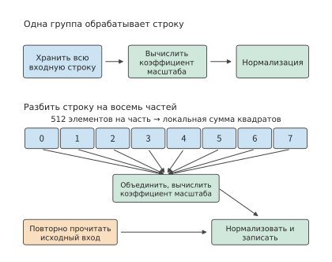
Рисунок 5-11. В верхней строке одна группа обрабатывает всю строку, а вход сохраняется до завершения нормализации; в нижней строке одна строка разделена на восемь сегментов: сначала вычисляются локальные суммы, затем они объединяются, после чего вход повторно читается и нормализуется. В каждой строке находится 4096 элементов BF16; на рисунке показана только одна строка, а при распространении на 1024 строки число задач первого этапа возрастает с 1024 до 8192. Оранжевая рамка обозначает дополнительное чтение исходного входа.
Подсчёт вдоль стрелок на рисунке 5-11 позволяет определить цену увеличения числа параллельных задач в виде дополнительных обращений к памяти. По-прежнему возьмём 1024 токена, причём вектор признаков каждого токена занимает одну строку входной матрицы. Число параллельных задач первого этапа увеличивается с 1024 до 8192 групп; 8192 локальные суммы FP32 занимают 32 KiB, а 1024 коэффициента масштабирования FP32 — 4 KiB. Программа с одной группой на строку сохраняет вход локально: она читает 8 MiB входных данных, дополнительно читает по одной копии BF16 gamma для каждой строки, суммарно 8 MiB, а затем записывает 8 MiB результатов. Общий объём обращений равен \(8+8+8=24\) MiB. После разбиения заключительный этап нормализации повторно читает 8 MiB входных данных; запись и чтение локальных сумм и коэффициентов масштабирования добавляют ещё около 0.1 MiB, поэтому общий объём достигает 32.1 MiB, а число запусков kernel увеличивается с одного до трёх.4
Обработка каждой группой лишь одной восьмой строки, как на рисунке, даёт ещё одно преимущество: сокращается объём необходимых временных данных. Для хранения полной строки в FP32 требуется 16 KiB, а для одной восьмой — лишь 2 KiB. Благодаря этому временные данные, которые прежде из-за нехватки регистров записывались в более далёкую память, могут остаться в регистрах. Выигрыш от разделённой редукции возникает по двум причинам: увеличивается число параллельных задач и уменьшается объём временных данных каждой группы. Цена — дополнительное чтение входа и передача данных между этапами.
В RMSNorm разбиение выполняется вдоль измерения редукции: сумма квадратов строки разделяется на восемь локальных сумм, которые затем необходимо объединить. В матричном умножении имеется такой же выбор. Для \(C_{M\times N}=A_{M\times K}W_{K\times N}\) работу можно распределить между разными исполнителями вдоль любого из трёх измерений. На рисунке 5-12 показано, какие входные данные требуются и какие результаты получаются при каждом из трёх вариантов разбиения.
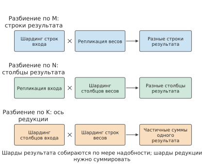
Рисунок 5-12. При разбиении по выходным строкам \(M\) или выходным столбцам \(N\) каждый исполнитель получает полный результат в собственной области, после чего при необходимости эти области объединяются; при разбиении по измерению редукции \(K\) исполнители получают частичные суммы одного и того же выхода, которые перед использованием необходимо сложить. Прямоугольники обозначают принадлежность данных и не масштабированы по числу элементов матрицы.
Первые два варианта требуют лишь копировать или делить входные данные по мере необходимости, а выход может оставаться разделённым, пока последующему оператору не потребуются полные данные. Третий вариант избавляет от копирования входа, но, как и в случае локальных сумм RMSNorm, добавляет этап объединения. Выходные блоки из раздела 5.2.2 одновременно разбиваются вдоль \(M\) и \(N\), после чего накапливаются блок за блоком вдоль \(K\): аккумулятор остаётся внутри одного блока потоков, поэтому объединение частичных сумм не пересекает никаких границ.
Порядок объединения также изменяет результат. Сложение чисел с плавающей точкой не обладает свойством ассоциативности: при вычислении \(1+2^{-24}+2^{-24}\) в FP32, если сначала сложить первые два слагаемых, сумма останется равной 1, а после добавления третьего также останется равной 1; если сначала сложить последние два слагаемых, получится \(2^{-23}\), а после прибавления к 1 — \(1+2^{-23}\). Результаты двух порядков различаются на один ULP (unit in the last place — расстояние между двумя соседними числами с плавающей точкой при одинаковом показателе степени). Биты, утраченные при округлении, восстановить невозможно, а каждое последующее сложение выполняется уже с округлённым числом.
Для RMSNorm из этого подраздела можно вычислить величину такого различия. Возьмём строку из 4096 элементов BF16. Квадрат каждого элемента точно представим в FP32, поэтому различия между приведёнными ниже способами возникают только из-за порядка сложения. В верхней части рисунка 5-13 сравниваются суммы квадратов, вычисленные при разделении на 1, 2, 4, 8, 16 и 32 сегмента; по горизонтальной оси отложено их расстояние до точного значения. Когда одна группа обрабатывает всю строку, аккумулятор постепенно возрастает примерно до 2038, тогда как каждое добавляемое значение составляет лишь около 0.5, поэтому младшие разряды многократно отбрасываются. В итоге результат оказывается ниже точного значения на 175.2 ULP. После разделения на восемь сегментов каждый аккумулятор возрастает лишь примерно до 255, после чего восемь локальных сумм складываются один раз; результат отличается от точного значения лишь на 9.2 ULP. Две траектории различаются на 166 ULP, а относительная разница составляет примерно \(9.9\times10^{-6}\). Таким образом, разбиение изменяет не только число параллельных задач, но и точность.
В нижней части зафиксированы восемь локальных сумм, а изменяется только порядок их объединения. 40,320 вариантов порядка дают лишь три разных результата FP32, различающихся между собой на один ULP. Если накапливать локальные суммы по одному адресу с помощью атомарного сложения, порядок их поступления определяется планированием; поэтому для одних и тех же входных данных и одной и той же программы два запуска могут дать разные результаты. Если сначала записать восемь локальных сумм в буфер, дождаться завершения всех записей, а затем поручить одному исполнителю сложить их в фиксированном порядке, каждый запуск будет давать одинаковый результат. Это имеет две составляющие стоимости: дополнительную запись и последующее чтение; кроме того, объединение может начаться только после завершения самого медленного сегмента, тогда как атомарное сложение накапливает значения в порядке поступления и не требует ждать готовности всех результатов.
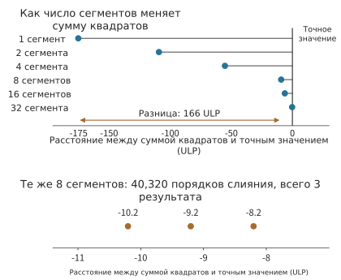
Рисунок 5-13. Расстояние между суммой квадратов одной строки из 4096 элементов BF16 и точным значением; единица горизонтальной оси — ULP формата FP32. В верхней части сравниваются шесть вариантов разбиения на 1–32 сегмента; в нижней части зафиксированы восемь локальных сумм и перечислены результаты для всех порядков их объединения. Точное значение вычислено с помощью рациональных чисел и используется только как база сравнения.
Различия не ограничиваются этапом вычисления суммы квадратов. Если продолжить вычисление с rms_norm_eps из Qwen3-8B, коэффициенты масштабирования двух траекторий различаются на 59 ULP, а первый выходной элемент этой строки — на 50 ULP; это различие передаётся и в следующий слой.3
Следовательно, способ разбиения влияет не только на скорость. В начале этого подраздела уже было показано, что число сегментов зависит от доступного числа параллельных задач: для 1024 строк одной группы на строку уже достаточно, а при decode с одной строкой её необходимо разделить. Поэтому один и тот же kernel изменяет число сегментов в зависимости от размера batch, и одна и та же входная строка при разных batch даёт разные выходы. Чтобы выход определялся только входом, ни число сегментов, ни порядок объединения не должны зависеть от batch. Цена этого требования — возврат параллелизма при малом batch к уровню до разбиения. Именно этим в разделе 10.5.3 объясняется, почему генерация и обучение могут загружать одинаковые веса, но вычислять разные logprob для одного и того же префикса.
Разбиение на блоки может пересекать и границу одной карты. В пределах одной карты вычисления блоков совместно выполняются блоками потоков, общей памятью и локальными редукциями; после распределения по нескольким картам исполнители, разделённые по выходному измерению, должны каждый получить входные данные, а исполнители, разделённые по измерению редукции, должны передать частичные суммы в одно место для сложения. Все эти перемещения проходят через межсоединение карт. Математические зависимости не меняются — меняются расстояние и стоимость перемещения данных.
Планирование после разбиения определяет порядок выполнения, размещение, буферизацию и перекрытие операций. Например, после разбиения вдоль \(K\) можно дождаться получения всех входных данных и только затем начать вычисление либо накапливать результат по мере поступления данных; от этого изменяются использование памяти и фактическое время ожидания. Образцы, последовательности, признаки, слои и эксперты модели предоставляют дополнительные направления распределения работы; слой представляет собой последовательный этап графа вычислений, а эксперт — ветвь, выбранную маршрутизацией. В разделе 6.1.4 эти направления распределения будут сопоставлены с тремя рассмотренными здесь вариантами разбиения, а в разделе 6.2 последовательно будет выведен соответствующий каждому из них объём коммуникации.
Разбиение матриц на блоки, bank padding и разделение редукции по-разному переупорядочивают одну и ту же математическую работу. Разбиение позволяет нескольким выходным значениям повторно использовать входные данные, padding распределяет запросы на чтение по разным bank, а разделение редукции увеличивает число задач, которые можно выполнять параллельно. При анализе программы необходимо отдельно вычислять выигрыш и накладные расходы каждого изменения, а также проверять, не изменяет ли оно результат вычислений с плавающей точкой. Сопутствующие эксперименты, сравнивающие непрерывный доступ и редукцию широких строк, содержат соответствующие записи выполнения.5
5.3 Слияние соседних операторов, буферизация и конвейерное выполнение¶
Внутри одного оператора входные данные можно повторно использовать в локальном хранилище. Такая же возможность существует и между соседними операторами: выход предыдущего оператора часто сразу становится входом следующего. Если следующий оператор может непосредственно прочитать результат из локального хранилища, можно избежать одной записи и повторного чтения. Для этого необходимо определить, какие данные нужны следующему оператору и когда все эти данные будут полностью вычислены.
5.3.1 Промежуточные тензоры и границы слияния¶
Расширим пример до двух проекций FFN. Пусть \(G=XW_g\), \(U=XW_u\), цепочка активации вычисляет \(Z=\operatorname{SiLU}(G)\odot U\), после чего Z передаётся в down-проекцию, которая уменьшает результат до ширины скрытого слоя. Формы G, U и Z равны \([1024,12288]\); при хранении в BF16 каждый из них занимает 24 MiB.
SiLU и \(\odot\) — поэлементные операции. Z[i,j] зависит только от G[i,j] и U[i,j], между различными позициями нет редукции. Поэтому после чтения двух элементов в одной позиции можно сразу вычислить окончательный результат для этой позиции, не вычисляя предварительно все результаты SiLU.
Сначала рассмотрим, куда направляется промежуточный результат \(T=\operatorname{SiLU}(G)\). При раздельном выполнении полный T записывается в хранилище следующего уровня, откуда затем считывается операцией умножения. После слияния небольшой фрагмент результатов SiLU можно напрямую передать умножению в том же kernel, а после использования освободить локальное пространство. Это похоже на передачу только что обработанного на верстаке материала непосредственно на следующую операцию без лишней отправки в удалённое место и обратной доставки. В данном случае устраняются запись и повторное чтение промежуточного результата, но обе операции по-прежнему должны быть выполнены.
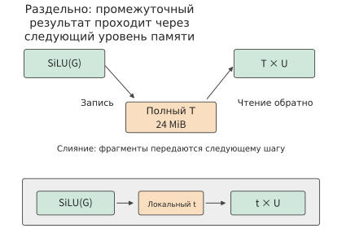
Рисунок 5-14: в верхней части полный T один раз записывается и один раз считывается; в нижней части локальный фрагмент t напрямую передаётся умножению. В обоих вариантах по-прежнему считываются G и U и записывается Z; эти общие рёбра ввода-вывода на рисунке опущены. После слияния сохраняются исходные правила округления промежуточного результата.
Пример 5-4. Как слияние оператора активации сокращает чтение и запись промежуточных тензоров? При раздельном выполнении сначала вычисляется \(T=\operatorname{SiLU}(G)\): считывается G и записывается T, всего 48 MiB. Затем вычисляется \(Z=T\odot U\): считываются T и U и записывается Z, всего 72 MiB. Общий объём чтения и записи составляет 120 MiB. Если слить обе операции, каждый раз считываются фрагменты G и U, локально выполняются SiLU и умножение, после чего записывается Z; требуется лишь 72 MiB.
Сэкономленные 48 MiB — это ровно одна запись и одно чтение T. Если использовать модель пропускной способности из предыдущего раздела и считать эффективную пропускную способность обеих программ одинаковой, отношение времени составит \(72/120=0.6\), то есть ускорение будет примерно 1,7 раза. В измерениях время цепочки активации снизилось примерно с 14,2 μs до 7,7 μs, что соответствует ускорению примерно в 1,8 раза. И теоретический расчёт, и результаты измерений указывают на один источник выигрыша: устранение записи и повторного чтения полного T.7
Далее Z квантуется с фиксированным scale, чтобы каждый элемент занимал только 1 byte. Отдельное преобразование требует считать 24 MiB Z и записать 12 MiB квантованного результата, добавляя 36 MiB. При полностью раздельном выполнении трёх операций общий объём составляет 156 MiB; при слиянии первых двух — 108 MiB; при слиянии всех трёх — \(24+24+12=60\) MiB. На рисунке 5-15 слева в каждом столбце показаны обязательные чтение и запись входных и выходных данных, после чего последовательно добавлены чтение и запись двух промежуточных результатов.
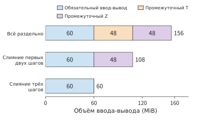
Рисунок 5-15: устранение сохранения каждого промежуточного результата размером 24 MiB исключает одну запись и одно чтение, то есть в сумме 48 MiB. G и U представлены в BF16, конечный результат занимает 1 byte на элемент, scale квантования задан заранее. Во всех вариантах используются одинаковые операции и порядок округления.
Ёмкость промежуточных тензоров и объём обращений к ним здесь — разные величины. Предположим, что на каждом шаге сначала выделяется память под выходные данные, а после завершения освобождаются уже использованные входные данные. При отдельном выполнении SiLU в памяти одновременно находятся G, U и T, поэтому пиковый объём равен 72 MiB. При слиянии трёх операций одновременно находятся G, U и конечный результат, поэтому пиковый объём равен 60 MiB. Объём чтения и записи уменьшается на 96 MiB, а пиковое потребление памяти — лишь на 12 MiB, поскольку одну и ту же область хранилища можно многократно читать и записывать.6
Каждый результат поэлементной операции зависит только от входных данных в соответствующей позиции, поэтому его можно вычислить сразу после чтения, сократив необходимость сохранять промежуточные результаты. Для успешного повторного использования также необходимо, чтобы два последовательных шага применяли совместимые компоновки данных, а буфер не перезаписывался до завершения последнего чтения. Далее рассмотрим эти два условия на протяжении жизненного цикла одного блока данных.
5.3.2 Преобразование компоновки, повторное использование буферов и двойная буферизация¶
Соседние операторы иногда используют разные компоновки. Предыдущему оператору удобно записывать данные построчно, а следующему требуется считывать их в другом порядке блоков. Если создать отдельный результат перестановки размером 24 MiB, потребуется прочитать исходный результат и записать новый, всего 48 MiB. Вместо этого предыдущий оператор может сразу записывать данные в компоновке, необходимой последующим вычислениям, устраняя отдельную перестановку. Сравнение общего времени вариантов «сначала вычислить, затем переставить» и «при вычислении сразу записать в новой компоновке» позволяет определить, какой из них быстрее.
Буфер также определяет, могут ли два этапа выполняться с перекрытием. Предположим, что модуль перемещения помещает блок 0 в слот A, после чего вычислительный модуль считывает A. Пока вычислительный модуль читает A, модуль перемещения помещает блок 1 в слот B. После перехода вычислений к B в A можно загрузить блок 2. Так два слота используются поочерёдно: пока вычислительный модуль читает текущий блок, модуль перемещения может записывать следующий.
Важно различать моменты «данные полностью перемещены» и «данные полностью использованы» для слота A. Вычисления начинают чтение только после завершения перемещения, а записать следующий блок в слот A, перезаписав прежнее содержимое, можно лишь после завершения последнего чтения. Используем значения для одного SM H100 из раздела 5.1.5: перемещение каждого блока занимает 1,29 μs, вычисление — 0,28 μs, причём модуль перемещения и вычислительный модуль работают независимо. На рисунке 5-16 показано состояние каждого слота в трёх временных интервалах, а на рисунке 5-17 на этой основе построена полная временная шкала перемещений и вычислений.
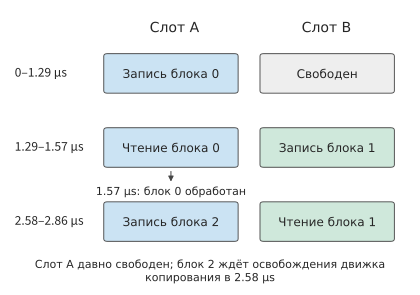
Рисунок 5-16: блок 0 использует слот A в интервале 1,29–1,57 μs, после чего слот A освобождается; блок 2 начинает записываться в A только после того, как модуль перемещения завершит перемещение блока 1 в момент 2,58 μs. На рисунке выделены три временных интервала; в интервале 1,57–2,58 μs ни в одном слоте нет данных, готовых к вычислению, поэтому вычислительный модуль простаивает. Цвет неизменно обозначает слот A или B, а текст указывает, какой блок в данный момент читается или записывается.
Пример 5-5. Как двойная буферизация перекрывает перемещение данных и вычисления? Перемещение каждого блока занимает 1,29 μs, а вычисление — 0,28 μs. Модуль перемещения и вычислительный модуль работают независимо, накладные расходы событий считаются нулевыми. Последовательная обработка четырёх блоков требует \(4\times(1.29+0.28)\approx6.28\) μs.
При использовании двух слотов блок 0 перемещается в интервале 0–1,29 μs и вычисляется в интервале 1,29–1,57 μs; одновременно в интервале 1,29–2,58 μs перемещается блок 1. Вычисление блока 0 завершается уже в момент 1,57 μs, и слот A сразу освобождается, но модуль перемещения лишь в момент 2,58 μs завершает перемещение блока 1 и начинает записывать блок 2. Затем модуль перемещения работает непрерывно, выдавая по одному блоку каждые 1,29 μs, тогда как вычислительный модуль каждый раз занят лишь 0,28 μs. Четвёртый блок завершается в момент 5,44 μs, поэтому время уменьшается всего примерно на 13%.
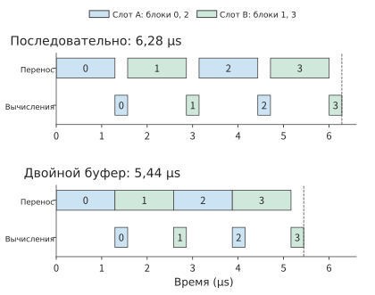
Рисунок 5-17: поочерёдное повторное использование двух входных слотов позволяет перекрыть перемещение и вычисления. На одном SM H100 перемещение каждого блока занимает 1,29 μs, а вычисление — 0,28 μs; ресурсы независимы, накладные расходы синхронизации не учитываются; одинаковый цвет обозначает один и тот же слот. Перекрытие скрывает только вычисления, а время завершения определяется непрерывной последовательностью перемещений.
Обобщим четыре блока до n блоков. Сначала необходимо переместить первый блок, затем каждый следующий блок завершается через время, требуемое более медленному этапу, а для последнего блока нужно дополнительно завершить вычисление. Поэтому:
Здесь \(t_m\) — время перемещения одного блока, а \(t_c\) — время его вычисления. В предыдущем примере \(t_m>t_c\), поэтому модуль перемещения непрерывно занят от 0 до 5,16 μs, а общее время равно \(4\times1.29+0.28\approx5.44\) μs. Вычислительный модуль работает лишь около одной пятой времени. Добавление третьего слота ничего не даст: двух слотов уже достаточно, чтобы модуль перемещения не простаивал, а дополнительные слоты не ускорят перемещение; ускорение вычислений также не поможет. Два слота — минимальная конфигурация, позволяющая организовать перекрытие. Увеличение числа слотов до \(n\), при котором перемещение начинается с опережением на \(n-1\) блоков, в CUTLASS называется использованием \(n\) stage. В этом примере модуль перемещения уже работает непрерывно, поэтому дополнительные stage лишь занимают больше памяти. Они могут заполнить простои только тогда, когда время перемещения отдельных блоков нестабильно или задержка одного перемещения превышает время вычисления одного блока; при этом требуемая ёмкость растёт пропорционально числу stage. Для дальнейшего сокращения времени необходимо уменьшить число перемещаемых байтов на блок: например, увеличить выходной блок согласно разделу 5.2.2, чтобы каждый входной байт участвовал в большем числе умножений со сложением, либо позволить одновременно выполняющимся блокам потоков совместно использовать входной блок в L2. Другой вариант — перейти на карту с более высокой пропускной способностью видеопамяти.
Вернёмся к перестановке, рассмотренной в начале подраздела. Если два этапа используют разный порядок доступа, буфер должен хранить больше ещё не использованных данных. Три ожидающих блока по 16 KiB занимают 48 KiB, а вместе с 32 KiB пространства для перестановки требуется 80 KiB. Один блок потоков RTX PRO 6000 может использовать не более 99 KB общей памяти, поэтому при одиночном размещении этот объём помещается. Если на одном SM должны одновременно находиться два таких блока потоков, каждому достанется не более 49 KiB: 100 KB за вычетом 1 KiB резерва для каждого из двух блоков делятся пополам. После вычета 32 KiB пространства для перестановки остаётся только один ожидающий слот размером 16 KiB. Перед записью второго блока модуль перемещения должен дождаться, пока вычислительный модуль использует и освободит этот слот. Механизм, при котором нижележащий этап не успевает обрабатывать данные и вынуждает вышележащий этап приостановиться, называется обратным давлением (backpressure). Выбор общей компоновки позволяет сократить очередь, а увеличение буфера — разместить больше уже записанных, но ещё не использованных данных.8
Ввод с хоста из раздела 5.1 также можно организовать таким образом. Поток копирования передаёт следующую партию, а вычислительный поток обрабатывает текущую. Вычислительный поток ожидает событие «копирование завершено», прежде чем читать новые входные данные, а поток копирования ожидает событие «вычисление завершено», прежде чем перезаписывать старый буфер. Эти два события соответственно гарантируют готовность входных данных и завершение использования старых данных, а выигрыш по времени возникает благодаря одновременной работе двух ресурсов.
FlashAttention показывает типичный пример совместного проектирования алгоритма и архитектуры. Математический результат внимания сохраняется, но меняются место хранения и время жизни промежуточных данных: последовательность «вычислить — записать — снова прочитать» заменяется блочной обработкой на кристалле и онлайн-обновлением.
5.3.3 FlashAttention: разбиение на блоки и онлайн-Softmax¶
В слитых поэлементных операциях из раздела 5.3.1 каждый выходной элемент зависит только от входных данных в соответствующей позиции, однако Softmax в механизме внимания использует всю строку оценок. При вычислении одной строки выходных данных внимания можно сначала преобразовать оценки каждой позиции в ещё не нормализованные веса, вычислить с ними взвешенную сумму значений, а затем разделить её на сумму весов. Можно сначала обработать один блок, запомнить его вклад во взвешенную сумму и сумму весов, а затем перейти к следующему. Если вклады удаётся правильно объединить, нет необходимости постоянно хранить все уже обработанные оценки. Сложность заключается в том, что Softmax вычисляет экспоненты оценок: если в последующем блоке встретится более высокая оценка, числовую базу ранее накопленного результата потребуется скорректировать.
FlashAttention организует хранение вокруг такого поблочного вычисления, сокращая чтение и запись промежуточных матриц внимания для длинных последовательностей в видеопамяти. Этот метод был предложен в 2022 году Tri Dao и другими исследователями Стэнфордского университета совместно с коллегами из Университета штата Нью-Йорк в Буффало.10
При знакомстве с FlashAttention автор вспомнил свой опыт работы над AKG в 2019 году. Тогда для слияния оператора Softmax автор долго искал подходящий онлайн-алгоритм. Впоследствии он нашёл исследование NVIDIA, опубликованное в 2018 году, и смог, используя возможности AKG по разбиению на блоки и слиянию, объединить предшествующее матричное умножение с последующим Softmax. В то время автор ещё даже не был знаком с механизмом внимания и лишь позднее осознал, что случайно пришёл к одной из ключевых идей FlashAttention. Однако для перехода от этого шага к полноценному FlashAttention необходимо также включить последующее взвешенное суммирование с V в онлайн-обновление и организовать внутрикристальное хранение и перемещение данных для всего вычисления внимания. Приведённый ниже вывод показывает, как это кажущееся локальным изменение алгоритма устраняет крупные промежуточные матрицы.
Вернёмся к самому вычислению внимания. Стандартный механизм внимания сначала вычисляет \(S=QK^\mathsf{T}/\sqrt d\), затем \(P=\operatorname{softmax}(S)\) и наконец \(O=PV\).
Если поручить эти три операции отдельным универсальным операторам, программу можно непосредственно составить по формулам, а результаты между операторами передавать через промежуточные тензоры. Зная все зависимости данных в вычислении внимания, можно выбрать другой способ компиляции и выполнения: использовать редукционную зависимость Softmax, перейти границы отдельных операторов и непрерывно выполнять вычисления над небольшими блоками данных. Сначала вычислим затраты на полное сохранение промежуточных тензоров, а затем выведем состояние, которое необходимо сохранять при поблочном вычислении.
Рассмотрим одну голову с длиной последовательности \(L=8192\) и размерностью головы \(d=128\), вычисляя внимание для всех токенов. Q, K, V и O используют BF16 и занимают по 2 MiB; полные S и P используют FP32 и занимают по 256 MiB. Однократное чтение Q, K и V и однократная запись O дают в сумме 8 MiB. Однако S и P по одному разу записываются и считываются, из-за чего требуется передать 1 GiB данных. Размер промежуточных матриц растёт квадратично с длиной последовательности, что приводит к большому объёму чтения и записи.9
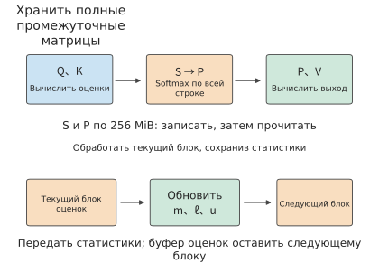
Рисунок 5-18: в верхней части сохраняются полные S и P — две матрицы FP32 по 256 MiB каждая, запись и повторное чтение которых в сумме составляют 1 GiB. В нижней части передаются только максимальное значение m, сумма экспонент ℓ и взвешенное значение u для уже обработанной части; после завершения обработки каждого блока его буфер оценок можно использовать повторно. Стрелки обобщённо показывают порядок обработки; полное вычисление также требует чтения Q, K и V.
Чтобы устранить этот 1 GiB промежуточного чтения и записи, можно воспользоваться идеей из раздела 5.3.1, однако прямому применению поэлементного слияния мешает одно обстоятельство: знаменатель Softmax представляет собой сумму экспонент всей строки. После чтения только предыдущего блока неизвестны ни окончательный знаменатель, ни наличие более высокой оценки в следующих блоках.
Чтобы отбрасывать уже обработанные оценки, необходимо хранить три величины: максимальную оценку m, сумму экспонент \(\ell\) относительно m и сумму значений u с теми же экспоненциальными весами. Здесь u обычно является вектором; сначала рассмотрим процесс обновления на небольшом примере со скалярными значениями.
Пример 5-6. Как онлайн-Softmax объединяет результаты блоков, сохраняя нормализацию? Оценки равны \([0,\ln2]\), соответствующие значения — \([1,3]\), а каждый блок содержит только один элемент. Для первого блока получаем \(m=0,\ell=1,u=1\). После обработки второго блока максимальное значение увеличивается до \(\ln2\), поэтому прежние \(\ell\) и u умножаются на \(r=1/2\). Экспонента нового элемента равна 1, следовательно, \(\ell'=1/2+1=1.5\), \(u'=1/2+3=3.5\), а результат равен \(7/3\). При обработке всей строки за один раз два веса пропорциональны 1 и 2, поэтому результат также равен \((1+2\times3)/3=7/3\).
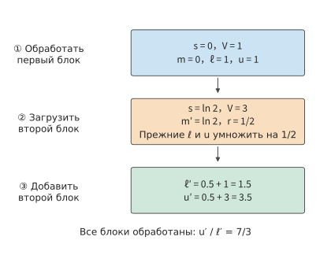
Рисунок 5-19: оценки двух блоков равны соответственно 0 и ln 2, а значения — 1 и 3. После увеличения максимального значения прежнюю сумму экспонент и прежнее взвешенное значение одновременно умножают на 1/2, затем добавляют вклад нового блока и лишь в конце выполняют деление. По стрелкам передаётся статистика, поэтому старые оценки хранить не требуется. m — максимальная из обработанных оценок, ℓ — сумма экспонент относительно m, u — соответствующая взвешенная сумма векторов значений, r — коэффициент масштабирования при переходе к новой базе максимального значения.
В небольшом примере второй блок увеличивает максимальное значение с 0 до ln 2. Экспонента старого элемента, ранее равная 1, при переходе к новой базе становится равной 1/2. Старые вклады в знаменатель и числитель необходимо уменьшить одновременно, чтобы сохранить неизменными их относительные веса.
Обобщим это на строку оценок. Вычитание общего максимального значения позволяет избежать переполнения экспоненты. Пусть \(\ell=\sum_j\exp(s_j-m)\), \(u=\sum_j\exp(s_j-m)V_j\), а окончательный результат равен \(u/\ell\). После поступления нового блока старое состояние сначала переводится к новой базе максимального значения, а затем к нему добавляется вклад нового блока:
Суммирование в правой части выполняется только по j из нового блока. Полный вклад старых блоков уже сохранён в \(\ell\) и u, поэтому повторно считывать старые оценки не требуется.
Именно это рекуррентное соотношение позволяет FlashAttention отказаться от хранения полных S и P. После обработки каждого блока обновляются m, \(\ell\) и u; использованные оценки и вероятности этого блока можно отбросить, а их буфер передать следующему блоку. Сопоставление запросов и ключей и взвешивание значений в пределах той же области внимания по-прежнему должны быть выполнены полностью. Меняются порядок вычислений и способ хранения промежуточных результатов; из-за вычислений с плавающей точкой также возникают различия в округлении.
Таким образом, задача хранения полной матрицы оценок превращается в задачу размещения текущего блока в быстром хранилище. Далее определим, сколько строк Q и сколько строк K/V следует обрабатывать за один раз, чтобы эффективнее использовать доступное пространство. Возьмём 99 KB общей памяти, доступной одному блоку потоков RTX PRO 6000, то есть 101,376 bytes, в качестве быстрого буфера. Одновременно будем хранить a строк Q и накопитель выходных данных FP32; размер блока оценок составит a×b. Блоки K и V поэтапно используют один и тот же входной слот размером b×d, оценки и вероятности — один слот размером a×b, а для построчной статистики и временных данных обновления выделяются ещё три вектора FP32. Требуемый объём локального хранилища равен:
Чем меньше блок K/V, тем меньше места занимают он сам и блок оценок, а значит, можно разместить больше строк Q. Большее число строк Q совместно использует один проход по K/V, поэтому вся совокупность K/V считывается повторно меньшее число раз. При b=64 помещаются a=82 строки Q, что требует \(\lceil8192/82\rceil=100\) полных проходов. Каждый проход считывает 4 MiB K/V; с учётом однократного чтения Q и записи O общий объём равен \(100\times4+4=404\) MiB.
Если уменьшить b до 1, помещаются a=128 строк Q, число проходов снижается до 64, а объём обращений — до \(64\times4+4=260\) MiB. Однако каждый проход теперь состоит не из 128, а из 8192 блоков K/V, поэтому онлайн-состояние приходится обновлять значительно чаще.
| Число строк в блоке K/V, b | Число помещающихся строк Q, a | Число полных проходов по K/V | Объём обращений между буфером и хранилищем следующего уровня | Число обновлений состояния между блоками Q и K/V |
|---|---|---|---|---|
| 1 | 128 | 64 | 260 MiB | 524288 |
| 64 | 82 | 100 | 404 MiB | 12800 |
| 128 | 53 | 155 | 624 MiB | 9920 |
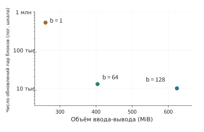
Рисунок 5-20: быстрый буфер представляет собой 99 KB общей памяти одного блока потоков RTX PRO 6000; длина последовательности равна 8192, размерность головы — 128, маска отсутствует. Каждая точка соответствует одному размеру блока K/V из таблицы в тексте. По горизонтальной оси отложен объём обращений между буфером и хранилищем следующего уровня, по вертикальной — число онлайн-обновлений; используется логарифмический масштаб. При переходе от точки b=64 к точке b=1 объём чтения уменьшается, но число обновлений возрастает примерно в 41 раз. b обозначает число токенов в одном блоке K/V.
На рисунке 5-20 две составляющие затрат показаны на одной плоскости: чем левее находится точка, тем меньше данных считывается, а чем ниже — тем меньше выполняется обновлений. При уменьшении блока с 64 строк до одной считывается на 144 MiB меньше, но число обновлений состояния возрастает с 12800 до 524288, то есть примерно в 41 раз. Каждое обновление требует управления циклом, сравнения максимальных значений, вычисления экспонент и масштабирования выходных данных. Кроме того, обработка лишь одной строки K/V за раз делает одно из измерений матричного умножения слишком малым, что мешает полноценно использовать матричные вычислительные модули. Меньшие блоки K/V сокращают чтение, но увеличивают число обновлений; большие блоки благоприятны для матричных вычислений и уменьшают накладные расходы циклов. Поэтому при выборе размера блока необходимо одновременно сравнивать оба вида затрат.
Онлайн-редукция устраняет чтение и запись полных промежуточных матриц, но внутриблочные матричные умножения, вычисления экспонент и обновления статистики всё равно должны выполняться. Дальнейшая оптимизация направлена именно на эту оставшуюся работу. FlashAttention-2 улучшает распределение задач между потоками, сокращая обмен промежуточными данными и число нематричных операций. FlashAttention-3 использует асинхронное выполнение, перекрывая перемещение, матричное умножение и Softmax. После устранения огромных промежуточных матриц эти усовершенствования дополнительно сокращают оставшееся время вычислений и перемещений.10
Чтобы проверить влияние этих механизмов в реальной программе, в сопутствующем эксперименте сравнивались две реализации одного интерфейса внимания в PyTorch. Здесь бэкенд (backend) означает вычислительную программу, которую фреймворк фактически выбирает внутри интерфейса: вызывающая сторона передаёт одинаковые Q, K и V, но фреймворк может выполнить вычисление внимания разными программами.
Математический бэкенд (SDPBackend.MATH) составляет вычисление по формуле внимания из универсальных операций матричного умножения, Softmax и других, сохраняя полные промежуточные матрицы оценок и вероятностей. Бэкенд FlashAttention (SDPBackend.FLASH_ATTENTION) использует описанные выше разбиение на блоки и онлайн-редукцию, избегая хранения полных промежуточных матриц. В эксперименте эти два бэкенда выбирались явно, после чего сравнивались время выполнения одного и того же вычисления внимания и дополнительное потребление видеопамяти.
В эксперименте использовалась RTX PRO 6000 Blackwell; входные и выходные данные имели формат BF16, за один раз обрабатывались одна последовательность и одна голова внимания с размерностью 128. Длина последовательности составляла 8192 токена. Использовалось каузальное внимание: каждая позиция учитывала только себя и предшествующие позиции. После прогрева группа операций GPU предварительно записывалась с помощью CUDA Graph и затем многократно выполнялась, чтобы исключить влияние повторной отправки операций с хоста. В пересчёте на одно вычисление внимания математическая реализация с сохранением полных промежуточных матриц занимала около 2,6 ms, а реализация FlashAttention с разбиением на блоки и онлайн-редукцией — около 80 μs; ускорение последней составляло примерно 33 раза.11
Также сравним пиковое дополнительное потребление видеопамяти при одном обычном вызове. Входные Q, K и V заранее находились в видеопамяти, а измерение охватывало выходные данные и временную рабочую область: математической реализации требовалось около 848 MiB, а реализации FlashAttention — около 22 MiB.
Это сравнение полноценных реализаций показывает, как совместно работают разбиение на блоки, онлайн-редукция и слияние: разбиение позволяет разместить текущие данные в быстром хранилище, онлайн-редукция позволяет вычислять Softmax поблочно, а слияние устраняет запись внутриблочных промежуточных результатов. Вместе эти три механизма изменяют время выполнения и требования к промежуточному хранилищу.
5.4 Компилятор: представление, преобразование и выбор¶
В двух предыдущих разделах циклы, размеры блоков, буферизация и границы операторов выбирались вручную. Реальные модели используют различные формы входных данных и комбинации операторов, а каждый ускоритель имеет собственную иерархию памяти и вычислительные ресурсы. Задача компилятора — представить эти способы реализации в виде программы, исключить некорректные преобразования с учётом зависимостей, а затем сравнить затраты на выполнение оставшихся реализаций.
5.4.1 Зачем сравнивать несколько реализаций¶
Вернёмся к цепочке поэлементных операций: SiLU выполняет нелинейное преобразование каждого числа, затем результат поэлементно умножается на другой вход, после чего квантуется в представление с низкой разрядностью. На каждой из двух границ между соседними операторами можно выбрать раздельное или слитное выполнение, поэтому возможны четыре варианта разбиения: три отдельных шага, слияние первых двух шагов, слияние последних двух шагов и слияние всех трёх шагов. Если цепочка содержит десять операторов, существует \(2^9=512\) вариантов разбиения по границам между соседними операторами. Для каждого варианта также можно выбирать размер блока, локальную раскладку и глубину конвейера.
Эти решения влияют друг на друга. Слияние двух шагов устраняет промежуточную запись, но одновременно увеличивает количество значений, которые необходимо хранить в один момент времени; рост объёма временных данных, в свою очередь, влияет на допустимый размер блока. Поэтому компилятор должен одновременно представлять содержание вычислений, порядок выполнения и места хранения данных. По одному лишь имени оператора невозможно оценить эти затраты.
Компилятор может выбирать реализацию в три этапа. Сначала математические операции представляются в виде циклов и обращений к массивам с явным указанием преобразуемых циклов и отношений чтения и записи. Затем корректность преобразований проверяется с учётом зависимостей чтения и записи и численных правил. Наконец, с учётом доступной ёмкости и измеренного времени сравниваются затраты на выполнение. Ниже первые два этапа сначала показаны на понятных циклах, а затем объясняется, как система автоматической генерации кода операторов AKG организует весь процесс с помощью полиэдральной компиляции — метода, описывающего итерации циклов и обращения к массивам посредством линейных ограничений.
5.4.2 Представление разбиения на блоки и слияния с помощью преобразований циклов¶
В разделе 5.2 определялось, блок какого размера обрабатывать за один раз, но необходимо также решить, в каком порядке вычислять эти блоки. Даже при одинаковом разбиении данных ненужные обращения всё равно возникнут, если только что использованные данные вытеснить, а вскоре снова загрузить. Преобразования циклов позволяют выразить такой порядок в программе: split разделяет цикл на «номер блока» и «позицию внутри блока», а reorder изменяет порядок обхода, чтобы данные, которые вскоре понадобятся снова, могли остаться в локальной памяти. Выбрав также уровень цикла, на котором промежуточный результат сохраняется или используется, можно явно задать продолжительность его хранения.
Рассмотрим \(Y=\operatorname{SiLU}(AW)\) при прежних \(M=1024,K=4096,N=12288\): матричное умножение использует накопление в FP32, после чего результат округляется до BF16 и передаётся функции активации. В самой прямолинейной программе сначала полностью вычисляется C, а затем обход C формирует Y:
for i in range(M):
for j in range(N):
acc = 0.0
for k in range(K):
acc += A[i, k] * W[k, j]
C[i, j] = round_to_bf16(acc)
for i in range(M):
for j in range(N):
Y[i, j] = silu(C[i, j])
Первое преобразование — разделение (split). Разделим i на номер блока \(i_o\) и координату внутри блока \(i_i\), задав \(i=64i_o+i_i\). Исходные 1024 строки превратятся в 16 блоков по 64 строки. Аналогичная обработка j даёт 192 блока столбцов. Одновременное разделение двух выходных измерений образует тайл 64×64.
Сначала разделение изменяет способ представления индексов. Чтобы непрерывно вычислять один тайл, необходимо также изменить порядок (reorder): во внешних циклах обходить выходные блоки, а во внутренних — элементы внутри блока. Затем K делится с шагом 32 на 128 блоков редукции. Программа выбирает выходной тайл, последовательно загружает требуемые блоки A и W и накапливает результат в одном и том же выходном блоке.
После перехода к такой структуре циклов можно определить, как долго должны храниться входные блоки. Текущие блоки A и W занимают по 4 КиБ и могут заменяться после вычисления одного блока редукции; 4096 аккумуляторов FP32 занимают 16 КиБ и должны сохраняться до завершения вычисления всех 128 блоков редукции. Поэтому буферы этих двух типов следует выделять и освобождать на разных уровнях циклов.
Наконец, изменяется место вычисления функции активации. После выполнения всей редукции по K для одного выходного тайла все его 4096 значений C уже готовы, поэтому можно сразу вычислить SiLU и записать Y; незавершённость остальных выходных тайлов не влияет на эту часть результата. Благодаря этому локально требуется хранить только результат текущего выходного блока, а полная матрица C размером 24 МиБ больше не нужна, что устраняет 48 МиБ записи и повторного чтения.
for io in range(ceil_div(M, BM)):
for jo in range(ceil_div(N, BN)):
acc = zeros_fp32(BM, BN)
for ko in range(ceil_div(K, BK)):
a = load_tile(A, io, ko, BM, BK)
w = load_tile(W, ko, jo, BK, BN)
matmul_accumulate(acc, a, w)
c = round_to_bf16(acc)
store_tile(Y, io, jo, silu(c))
Здесь load_tile и matmul_accumulate обозначают соответственно блочное чтение и матричное накопление; допустимые позиции в последнем неполном тайле отмечаются маской. Отступы в псевдокоде наглядно показывают порядок действий: входные блоки обновляются внутри цикла ko, аккумулятор сохраняется на протяжении всего цикла ko, а функция активации вычисляется после его завершения.
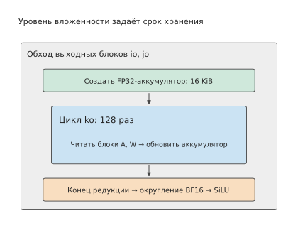
Рисунок 5-21. Иерархия циклов определяет, как долго должны храниться временные данные. Внешний цикл выбирает выходной блок и создаёт аккумулятор размером 16 КиБ; внутренний цикл ko многократно считывает блоки A и W, а после завершения всей редукции выполняются округление и вычисление функции активации.
В системах программирования этим действиям планирования соответствуют определённые конструкции. Halide — система программирования, в которой отдельно описываются «что вычислять» и «как планировать вычисления»; программист изменяет способ выполнения с помощью таких действий, как split, tile и reorder. Оператор, создающий промежуточный результат, здесь называется производителем, а использующий этот результат оператор — потребителем. compute_at задаёт, внутри какого уровня циклов потребителя выполняется производитель. TVM — система компиляции тензорных вычислений, которая также задаёт место вычисления и операции чтения и записи кэша посредством расписания, позволяя соседним операторам последовательно обрабатывать один и тот же блок данных.17
Место вычисления одновременно определяет повторное использование и повторное вычисление. Если вычисление промежуточного результата поместить на самый внешний уровень, сначала будет полностью вычислен результат, который затем смогут считывать все последующие вычисления. Если поместить его внутрь блочного цикла последующего вычисления, будет вычисляться только требуемая в данный момент часть. Если одна и та же часть промежуточного результата нужна нескольким выходным блокам, её вычисление внутри каждого блока приведёт к повторам. Поэтому компилятор должен сравнивать два подхода: сохранить промежуточный результат для многократного чтения или вычислять его заново перед каждым использованием.
Операция fuse для циклов также позволяет объединить несколько измерений итерации в одно. Например, двумерные координаты 16×192 выходных блоков можно преобразовать в одномерные номера от 0 до 3071, а затем распределить их между рабочими группами ускорителя. Это изменяет порядок обхода выходных блоков и способ распределения задач; выполнение SiLU непосредственно после тайла матричного умножения, в свою очередь, устраняет запись и повторное чтение промежуточной матрицы. Оба преобразования можно использовать совместно в одном расписании.
5.4.3 Как зависимости и округление ограничивают преобразования¶
В предыдущем подразделе функция активации была перенесена внутрь выходного тайла, но по-прежнему выполнялась после завершения цикла ko. Причину можно показать на двух числах. Пусть две частичные суммы одного выходного значения равны 1 и −1, а их полная сумма — 0, поэтому SiLU(0)=0. Если сначала применить SiLU к каждой частичной сумме, а затем сложить результаты, получится \(\operatorname{SiLU}(1)+\operatorname{SiLU}(-1)\approx0.4621\). Перенос вычисления функции активации перед полным суммированием уже изменяет операцию.
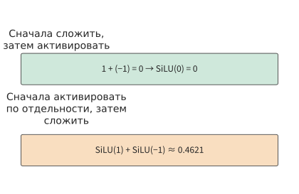
Рисунок 5-22. Если сначала сложить те же две частичные суммы и получить ноль, применение SiLU по-прежнему даст ноль; если сначала применить SiLU к каждой части, а затем сложить результаты, получится приблизительно 0,4621. Эти два числа показывают, что перенос вычисления функции активации перед суммированием изменяет результат.
Таким образом, зависимости, которые должен соблюдать компилятор, существуют на двух уровнях: частичные суммы одного выходного значения должны объединяться по правилам редукции, а последующий оператор должен дождаться вычисления требуемого результата. Разные выходные значения можно вычислять параллельно; редукция одного выходного значения и последующие операции над ним должны выполняться в порядке зависимостей.
Блочная редукция подчиняется тому же ограничению зависимостей. FlashAttention из раздела 5.3.3 может выполнять вычисления блок за блоком, поскольку сохраняет m, \(\ell\) и u, а при изменении максимума одновременно корректирует ранее накопленные сумму экспонент и взвешенное значение. Если сохранять только уже нормализованный результат каждого блока, информация об относительных величинах знаменателей блоков будет потеряна. Например, пусть каждый из двух блоков содержит только одно значение — соответственно 1 и 3. Результаты внутри блоков по-прежнему равны 1 и 3; по этим двум результатам невозможно определить, должна ли Softmax всей строки назначить им веса в отношении 1:2 или 2:1. Поэтому блочная редукция должна сохранять достаточный набор статистик, позволяющий корректно объединить результаты блоков.
Округление чисел с плавающей точкой дополнительно ограничивает преобразования. Исходная программа округляет накопленный в FP32 результат до BF16, а затем применяет функцию активации; слитная программа также должна выполнить round_to_bf16 до активации. Промежуточное значение можно передать функции активации непосредственно из регистра, но само округление всё равно должно произойти. Место хранения данных и числовой формат — два независимых решения.
Пример 5-7. Как коэффициент масштабирования для всей строки ограничивает порядок блочных вычислений? Строка содержит 256 элементов и разделена на два блока по 128 элементов. Первые элементы блоков равны соответственно 1 и 10, остальные — нулю. Для квантования используется формат E4M3FN: восьмибитное представление с одним знаковым битом, четырьмя битами экспоненты и тремя битами мантиссы, максимальное конечное значение которого равно 448. Коэффициент масштабирования определяется максимальным абсолютным значением во всей строке; затем выполняется скалярное произведение, причём в весах только первый элемент равен 1. Поэтому результат полностью определяется способом квантования первого элемента.
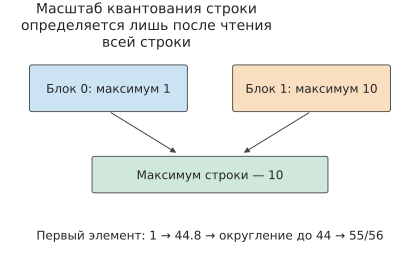
Рисунок 5-23. Строка разделена на два блока, и значение 10 из второго блока определяет коэффициент масштабирования для всей строки. Первый элемент необходимо сначала масштабировать с этим коэффициентом, затем округлить до допустимого в формате значения и, наконец, деквантовать.
Если сначала прочитать всю строку, максимальное значение будет равно 10. Первый элемент масштабируется до \(1\times448/10=44.8\), округляется до представимого в этом формате значения 44, а после деквантования получается \(44\times10/448=55/56\). Если квантовать данные сразу после чтения первого блока, текущий максимум будет равен 1, первый элемент можно представить значением 448, а результат деквантования будет в точности равен 1.
После чтения значения 10 из второго блока уже невозможно заставить первый элемент повторно пройти округление 44.8→44, даже если скорректировать коэффициент масштабирования для последующих вычислений. Результаты двух подходов отличаются на \(1/56\), то есть примерно на 1,8%. Поэтому, если коэффициент масштабирования определяется максимумом всей строки, сначала следует прочитать всю строку и найти максимум, а уже затем выполнять квантование.18
Эти примеры показывают, какие преобразования допустимы, а какой порядок операций необходимо сохранять. Порядок вычисления разных выходных значений можно менять, входные данные можно кэшировать блоками, а готовые результаты можно непосредственно передавать последующим операциям; способ объединения при редукции и место округления при квантовании относятся к определению операции и должны сохраняться при преобразованиях.
5.4.4 AKG: планирование вычислений и перемещений данных с помощью isl schedule¶
AKG — разработанный Huawei компилятор с открытым исходным кодом для автоматической генерации операторов нейронных сетей, их оптимизации и генерации кода для NPU, в том числе Ascend. Автор книги участвовал в его разработке. Блочные циклы из предыдущего подраздела уже показывают, какие вычисления требуются; AKG передаёт тензорную программу полиэдральному компилятору, который автоматически организует порядок циклов, разбиение на блоки, внутрикристальные буферы, перемещения данных и целевой код. Сначала на конкретных числах рассмотрим, что даёт такая организация, а затем разберём представление isl.15
Пусть \(C=AB\), а все три матрицы имеют форму \(4096\times4096\). A и B используют BF16, то есть 2 байта на элемент; C — FP32, то есть 4 байта на элемент. Одно матричное умножение требует
Простейшая запись вычисления имеет вид:
for i in range(4096):
for j in range(4096):
acc = 0
for k in range(4096):
acc += A[i, k] * B[k, j]
C[i, j] = acc
Если для каждого выходного элемента считывать операнды A и B из внешней памяти, объём чтения входных данных составит
Эти циклы выражают математическое вычисление, но не повторное использование данных. Возьмём выходной тайл \(B_M=B_N=64\) и тайл редукции \(B_K=32\). Всего получим \(64\times64=4096\) выходных тайлов; каждому из них нужны \(4096/32=128\) тайлов редукции. Один тайл A и один тайл B занимают по
Если для каждого выходного тайла считывать набор тайлов A/B вдоль измерения K, суммарный объём его входных данных равен \(128\times(4+4)=1024\) КиБ. Для всех выходных тайлов объём чтения составит \(4096\times1024\ \text{КиБ}=4\ \text{ГиБ}\). Итоговая запись C требует \(4096^2\times4=64\) МиБ. Таким образом, блочное расписание с удержанием выходного тайла сокращает чтение входных данных с 256 ГиБ примерно до 4 ГиБ — в 64 раза. Взамен для каждого тайла необходимо удерживать аккумулятор FP32 объёмом \(64\times64\times4=16\) КиБ.
Соответствующая блочная программа:
for io in range(64):
for jo in range(64):
acc = zeros_fp32(64, 64)
for ko in range(128):
a = load_tile(A, io*64, ko*32, 64, 32)
b = load_tile(B, ko*32, jo*64, 32, 64)
acc += a @ b
store_tile(C, io*64, jo*64, acc)
Отношений доступа в этой программе уже достаточно для определения рабочего набора тайла: область A задаётся координатами (io,ko), область B — (ko,jo), а аккумулятор acc сохраняется на протяжении 128 обновлений по ko. Далее AKG должен преобразовать эти отношения в исполнимое расписание и схему размещения данных.
Что такое isl schedule¶
Выполнение цикла состоит из множества экземпляров оператора. Оператор умножения со сложением выше обозначим \(S(i,j,k)\); например, \(S(17,29,4)\) — это экземпляр, вычисляющий \(A[17,4]\times B[4,29]\). Все допустимые экземпляры образуют область итераций:
isl schedule назначает каждому экземпляру одну или несколько целочисленных координат. Их лексикографическое упорядочение определяет новый порядок выполнения. Исходные циклы можно записать так:
После разбиения на блоки расписание имеет вид:
Первые три координаты — это io, jo, ko, а последние три — внутриблочные координаты ii, jj, kk. Лексикографический порядок задаёт вложенность: выбор выходного тайла 64×64, перебор его 128 тайлов по K, а внутри каждого из них — перебор элементов. Отображение сохраняет экземпляры и индексы массивов, меняя лишь временные координаты выполнения. Зависимость редукции требует объединять обновления вдоль K для каждой пары (i,j) в допустимом порядке.
«Аффинное» означает, что координаты расписания выражаются линейными комбинациями переменных циклов, например 2*i+j; частное и остаток при разбиении на блоки относятся к квазиаффинным выражениям. isl использует целочисленные множества и отображения для представления границ, обращений к данным и зависимостей, после чего ищет расписание, удовлетворяющее ограничениям зависимостей. Это не таблица производительности, а математическое отображение, назначающее координаты каждому вычислению.
Дерево расписания организует это отображение в виде дерева. Для рассматриваемого GEMM его можно прочитать так:
Domain {S(i,j,k)}
└── Band {io, jo, ko}
└── Band {ii, jj, kk}
Domain перечисляет существующие экземпляры; Band представляет группу измерений циклов, которые совместно преобразуются и упорядочиваются. В подграфах AKG с несколькими операторами также используются Sequence для задания последовательности, Filter для выбора множества экземпляров и Extension для включения экземпляров производителя в тайл потребителя. Дерево расписания можно понимать как структурированное представление вложенности циклов и последовательности операторов, а аффинное отображение — как координаты каждого экземпляра в этом дереве.
От расписания к данным на кристалле¶
То же расписание можно непосредственно записать в виде отображений перемещения данных:
Слева записаны логические координаты внутрикристальных тайлов, справа — адреса в глобальных матрицах. Для A_L1 и B_L1 требуется по 4 КиБ, для C_L0 — 16 КиБ; при двойной буферизации входные слоты занимают по 8 КиБ. По этим размерам компилятор проверяет вместимость буферов, вставляет перемещения и определяет точки повторного использования данных.
В расписании в стиле Halide/TVM те же решения можно записать так:
# compute: математические отношения
C[i, j] = sum(k, A[i, k] * B[k, j])
# schedule: координаты циклов и размещение данных
io, ii = split(i, factor=64)
jo, jj = split(j, factor=64)
ko, kk = split(k, factor=32)
reorder(io, jo, ko, ii, jj, kk)
A_L1 = cache_read(A, "L1")
B_L1 = cache_read(B, "L1")
C_L0 = cache_write(C, "L0C")
compute_at(A_L1, ko)
compute_at(B_L1, ko)
compute_at(C_L0, jo)
split создаёт координаты частного и остатка, reorder размещает циклы тайлов снаружи внутриблочных циклов, compute_at указывает, на каком уровне цикла потребителя формируется результат производителя, а cache_read/cache_write задают размещение во внутрикристальной памяти. Полиэдральное планирование AKG, описание аппаратных ресурсов и управление памятью автоматически преобразуют эти отношения, после чего генерируется код для MTE, Cube, Vector и механизмов синхронизации.
5.4.5 TileLang-Ascend: запись того же расписания в блочной программе¶
TileLang создан преимущественно совместными усилиями исследователей Пекинского университета и Microsoft Research. Он отделяет поток данных от пространства расписаний: T.copy, T.gemm, T.reduce выражают поток данных на уровне тайлов, а T.Pipelined, аннотации раскладки, привязка потоков и перестановки данных — расписание. Проект TileKernels компании DeepSeek реализует операторы обучения и инференса на TileLang; 30 сентября 2026 года в нём появился бэкенд Huawei Ascend, позволяющий использовать один набор интерфейсов Python для NVIDIA GPU и Huawei Ascend NPU. Отдельный проект tilelang-ascend предоставляет варианты адаптации через Ascend C/PTO и AscendNPU IR.121314
Для того же \(C=AB\) поток данных можно выразить следующим псевдокодом в стиле Ascend:
with T.Kernel(core_num, is_npu=True) as (cid, _):
A_L1 = T.alloc_L1((stages, BM, K_L1), "float16")
B_L1 = T.alloc_L1((stages, K_L1, BN), "float16")
A_L0 = T.alloc_L0A((stages, BM, BK), "float16")
B_L0 = T.alloc_L0B((stages, BK, BN), "float16")
C_L0 = T.alloc_L0C((BM, BN), "float32")
for ko1 in T.Pipelined(ceil_div(K, K_L1), num_stages=stages):
T.copy(A[...], A_L1[ko1 % stages, :, :])
T.copy(B[...], B_L1[ko1 % stages, :, :])
for ko0 in T.serial(ceil_div(K_L1, BK)):
T.copy(A_L1[ko1 % stages, ...], A_L0[ko0 % stages, ...])
T.copy(B_L1[ko1 % stages, ...], B_L0[ko0 % stages, ...])
T.mma(A_L0[ko0 % stages, ...],
B_L0[ko0 % stages, ...], C_L0,
init=(ko1 == 0 and ko0 == 0))
T.copy(C_L0, C[...])
Этот псевдокод и расписание isl выше — два представления одного вычисления. ko1 и ko0 соответствуют двум уровням разбиения по K; A_L1/B_L1 — внешним входным тайлам, A_L0/B_L0 — входным тайлам Cube, а C_L0 удерживает частичную сумму на протяжении циклов редукции. Слоты stages позволяют перекрывать следующее перемещение с текущей операцией mma. Для завершённого блочного расписания также нужны отображение номера ядра в (io,jo), обработка краевых блоков, раскладки, swizzle и флаги синхронизации.
Обе системы выражают аппаратный поток данных. AKG главным образом опирается на isl, описание аппаратных ресурсов и управление памятью для автоматического формирования расписания и перемещений; TileLang позволяет программисту явно записывать больше решений о расписании в блочной программе. В таблице сопоставлены представления одного GEMM в двух системах.
| Одно решение | Представление в isl/AKG | Представление в TileLang-Ascend |
|---|---|---|
| Выходной тайл | floor(i/BM), floor(j/BN) в аффинном расписании |
Координаты тайлов и циклы в T.Kernel |
| Разбиение по K | floor(k/BK) и внутриблочная координата |
Два уровня циклов: ko1, ko0 |
| Входная область | Выводится из отношений доступа к массивам | Исходный срез и целевой буфер в T.copy |
| Внутрикристальная память | Управление памятью переносит данные в UB/L1/L0 | Объявления alloc_L1/L0A/L0B/L0C |
| Матричные вычисления | Генератор кода отображает их на инструкции Cube | T.mma выражает операцию Cube |
| Конвейер и синхронизация | Формируются по зависимостям, ёмкости и бэкенду | T.Pipelined, флаги или автоматическая синхронизация |
Слияние и повторное использование данных: пример 5-8¶
Редакционное примечание русского издания: в текущем оригинале следующий пример отсутствует, но подраздел 5.4.6 начинается словами «В примере 5-8 две реализации уже можно сравнить по объёму чтения и записи». Чтобы сохранить предмет этой ссылки, пример и рисунок 5-24 оставлены из предыдущей редакции автора; это редакционное решение русского издания. Источник: глава 5 оригинала на коммите 56ecb425.
Совместный анализ вычислений и памяти также объясняет, почему слияние иногда увеличивает объём обращений к памяти. В рассмотренной ранее цепочке поэлементных операций слияние сократило чтение промежуточных значений; однако если промежуточный результат представлен меньшим числом битов и многократно считывается последующими вычислениями, его сохранение, напротив, может уменьшить объём чтения.
Пример 5-8. Что требует меньше операций чтения и записи: отдельное квантование или его слияние с матричным умножением? Возьмём вход A в формате FP16 с формой \([4096,4096]\), занимающий 32 МиБ; после квантования в FP8 он занимает 16 МиБ. Веса FP8 с формой \([4096,1536]\) занимают 6 МиБ, а выход FP16 — 12 МиБ. Выход разбивается на блоки 128×128: всего 32 блока строк и 12 блоков столбцов. Каждый выходной блок независимо считывает необходимые данные, а коэффициент масштабирования определяется максимумом всей строки.
Сначала рассмотрим отдельное выполнение квантования. При обработке каждой строки для её входных данных выделяется 8 КиБ локальной памяти, после нахождения коэффициента масштабирования выполняется квантование. Весь вход считывается в объёме 32 МиБ, а результаты квантования записываются в объёме 16 МиБ. Затем каждый из 12 выходных блоков столбцов один раз считывает вход FP8, что в сумме составляет 192 МиБ. Таким образом, объём чтения и записи, связанный со входом, равен \(32+16+192=240\) МиБ.
Если объединить квантование с матричным умножением, сначала исходный вход объёмом 32 МиБ считывается для определения коэффициента масштабирования каждой строки; затем каждый из 12 блоков столбцов считывает те же 32 МиБ исходного входа и выполняет локальное квантование. Связанный со входом объём обращений равен \(32+12\times32=416\) МиБ. Хотя запись 16 МиБ результатов квантования устраняется, объём входа, считываемого каждым блоком столбцов, возрастает с 16 до 32 МиБ, поэтому 12 чтений добавляют 192 МиБ.
В обоих вариантах каждый из 32 блоков строк считывает 6 МиБ весов, после чего записывается выход объёмом 12 МиБ: всего \(32\times6+12=204\) МиБ. Поэтому общий объём обращений составляет соответственно \(240+204=444\) МиБ и \(416+204=620\) МиБ, то есть после слияния он возрастает примерно на 40%.
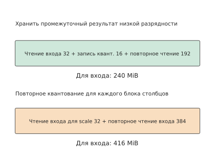
Рисунок 5-24. В обоих вариантах сначала считывается весь вход для определения коэффициента масштабирования каждой строки. После сохранения результата FP8 суммарное повторное чтение 12 блоками столбцов составляет 192 МиБ; в слитном варианте повторно считывается 384 МиБ входа FP16. На веса и выход в обоих случаях дополнительно приходится по 204 МиБ.
На рисунке 5-24 различие определяется повторным чтением данных для 12 блоков столбцов: объём данных при каждом чтении отличается вдвое. Поэтому число выходных блоков столбцов непосредственно определяет разницу в объёме обращений к памяти между двумя вариантами. При добавлении каждого блока столбцов вариант с сохранением результата квантования считывает дополнительно 16 МиБ, а слитный вариант — 32 МиБ. Если поместить все 1536 выходных столбцов в один блок, такое повторное чтение между блоками столбцов будет устранено; однако соответствующий выходной аккумулятор расширится со 128 до 1536 столбцов и потребует в 12 раз больше памяти. Поэтому при выборе, следует ли объединять квантование с матричным умножением, необходимо по-прежнему сравнивать использование локальной памяти и повторное использование данных, рассмотренные в разделе 5.2.18
AKG совместно рассматривает слияние и разбиение на блоки именно для учёта таких взаимосвязей. При изменении места вычисления промежуточного результата меняются данные, считываемые каждым выходным блоком, и число их чтений; вслед за этим изменяются требования к буферам, что влияет на допустимые размеры блоков.
5.4.6 Оценка стоимости и выбор по результатам измерений¶
В примере 5-8 две реализации уже можно сравнить по объёму чтения и записи. При большем количестве комбинаций разбиения и слияния компилятор таким же образом постепенно сужает область поиска: сначала проверяет зависимости и численные правила, затем исключает реализации, которым недостаточно локальной памяти, и, наконец, оценивает затраты на выполнение, определяя, какие реализации следует тестировать в первую очередь. В разделе 5.2 уже был приведён один способ оценки: сравнение двух тайлов по объёму обращений и эффективной пропускной способности. Компилятор может также учесть степень использования матричных инструкций, требования к регистрам и затраты на запуск, чтобы определить порядок тестирования реализаций.
Для матрицы из раздела 5.2 и общей памяти RTX PRO 6000 процесс выбора можно представить следующей таблицей. В указанном разделе входные буферы и аккумуляторы размещались в 100 КиБ общей памяти каждого SM; если перенести аккумуляторы в регистры, как в разделе 5.1.5, необходимо отдельно проверить общую память и регистры, поскольку ёмкость одного типа ресурсов нельзя использовать вместо другого. Если перевести двух кандидатов на двойную буферизацию, объём входных буферов удвоится, рабочие наборы составят соответственно 32 КиБ и 96 КиБ, а число одновременно размещаемых на каждом SM блоков потоков изменится с 4 и 1 на 3 и 1.
| Этап выбора | Данные для матричного примера этой главы | Основание для исключения или сравнения |
|---|---|---|
| Зафиксировать цель | Форма входа, точность, ошибка, частота вызовов | Сравнение одинаковой математической работы и одинаковой нагрузки |
| Перечислить кандидатов | Тайл, порядок циклов, число буферов, область слияния | Поддержка компилятором и оборудованием |
| Проверить выполнимость | Общая память, регистры, потоки, выравнивание и зависимости | Отчёт о ресурсах компиляции и проверка корректности |
| Оценить время | Объём вычислений, фактический объём чтения и записи, запуск и преобразование раскладки | Время обслуживания каждым ресурсом и критический путь |
| Измерить и выбрать | Время и разброс для репрезентативных форм, а также полная цепочка операторов | Минимизация стоимости рабочей нагрузки с сохранением близких по результату кандидатов |
Сначала по отчёту о ресурсах исключаются кандидаты, которым недостаточно доступной ёмкости, а затем для оставшихся измеряются эффективная пропускная способность, время вычислений и время полной цепочки операторов. Если разлив регистров, дополнение краёв матрицы или снижение параллелизма сводят на нет выигрыш от повторного использования, следует вернуться к таблице кандидатов и изменить форму блока либо число буферов. В главе 6 используется тот же процесс, но размещение тайлов распространяется на несколько карт, а межблочные зависимости преобразуются в коллективные коммуникации — операции, при которых несколько карт обмениваются данными или агрегируют их по фиксированной схеме.
Этап измерений можно проиллюстрировать программой транспонирования матриц из сопутствующего эксперимента 5-5: одна и та же программа на RTX PRO 6000 Blackwell выполняется приблизительно за 7,9 мкс с блоками 16×16 и за 2,9 мкс с блоками 32×32, что даёт ускорение примерно в 2,7 раза. При удвоении каждого измерения блока число элементов внутри него увеличивается в четыре раза, а вместе с ним изменяются раскладка памяти и взаимодействие потоков.20
Автоматическая настройка TVM ищет варианты расписания, включая разбиение на блоки и порядок циклов, по результатам измерений на оборудовании. AI-агент, способный вызывать инструменты компиляции и тестирования, может изменять расписание или код ядра и тем самым пробовать реализации за пределами исходных шаблонов расписания. В обоих случаях объектом оценки служит скомпилированная программа: корректные реализации отбираются с помощью численной проверки, а расписания оцениваются по времени выполнения. Оценка проводится именно для скомпилированной программы, поскольку компилятор может объединить операторы, раздельно представленные в исходном коде, в одно ядро.19 Метод поиска должен решить ещё одну задачу: на какой нагрузке оценивать эти реализации.
Пример 5-9. Как соотношение вызовов с разными формами входа влияет на выбор реализации оператора? У оператора есть две формы входа, A и B, каждую из которых исходная реализация обрабатывает за 10 мкс. Новая реализация обрабатывает A за 5 мкс, а B — за 20 мкс: время для A уменьшается вдвое, а для B удваивается. Если каждая форма встречается один раз, суммарное время увеличивается с 20 до 25 мкс, то есть новая реализация работает на 25% дольше. Если A вызывается 100 раз, а B — один раз, суммарное время уменьшается с 1010 до 520 мкс, то есть новая реализация даёт ускорение примерно в 1,9 раза.
Пусть доля вызовов с формой входа A равна p. Среднее время выполнения исходной реализации равно 10 мкс, а новой:
Чтобы среднее время новой реализации было меньше, должно выполняться \(20-15p<10\), то есть \(p>2/3\). Точка пересечения на рисунке 5-25 показывает, что новая реализация становится быстрее, только когда доля A превышает 2/3 всех вызовов.
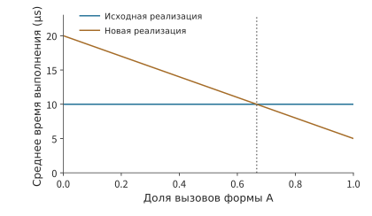
Рисунок 5-25. Когда доля формы A превышает 2/3, суммарное время выполнения новой реализации становится меньше. Исходное время для A и B равно 10 мкс, а в новой реализации — соответственно 5 и 20 мкс; вызовы выполняются последовательно, и на рисунке сравнивается установившийся режим выполнения. Точка пересечения определяется равенством среднего времени двух реализаций.
Таким образом, настройка может выбирать отдельную реализацию для каждой формы либо одну реализацию с меньшей совокупной стоимостью с учётом фактической частоты вызовов. Затраченное самим поиском время компиляции и измерений относится к подготовительным затратам. В сопутствующем эксперименте с агентом сохраняются результаты генерации кода, повторных отправок и измерений; в следующем разделе с учётом числа вызовов будет рассчитано, сколько времени потребуется, чтобы экономия времени выполнения окупила затраты на поиск.21
5.5 Среда выполнения: отправка, повторное воспроизведение и динамические формы¶
После того как компилятор выбрал программу для ускорителя, среда выполнения должна многократно подготавливать входные данные, выбирать программу, отправлять задачи и управлять буферами. Даже при использовании одного и того же кода kernel изменение способа отправки или повторное использование уже полученных результатов подготовки влияет на общее время. В этом разделе мы продолжим рассмотрение временной шкалы из раздела 5.1 и проанализируем эту работу хоста.
5.5.1 Перекрытие подготовки на хосте и вычислений на ускорителе¶
В разделе 5.1 время отправки с CPU было отделено от времени выполнения на ускорителе, а в разделе 5.3 было показано, что ресурсы этих двух типов могут работать параллельно. Применим оба положения к одному прямому проходу модели: CPU проверяет формы и подготавливает параметры или метаданные для следующего этапа, пока GPU выполняет текущий этап. Если подготовку следующего этапа можно начать заранее, обе стороны образуют конвейер; если CPU каждый раз начинает подготовку только после завершения работы GPU, ускоритель будет останавливаться между этапами.
Пример 5-10. Почему после ускорения ускорителя узким местом становится хост? Предположим, работа состоит из 100 сегментов, а подготовка на хосте и вычисления на ускорителе для каждого сегмента занимают по 20 μs. Все данные, необходимые для подготовки следующего сегмента, уже известны, буферов достаточно, ресурсы двух типов независимы. При строго последовательном выполнении потребуется \(100\times(20+20)=4000\) μs. При использовании конвейера сначала завершается подготовка первого сегмента, после чего каждые 20 μs завершается один сегмент, поэтому общее время составляет \(20+100\times20=2020\) μs.
Сократим вычисления на ускорителе до 5 μs, сохранив время подготовки одного сегмента на хосте равным 20 μs. Время конвейера станет равно \(100\times20+5=2005\) μs, то есть сократится лишь на 15 μs. Скорость отправки задач с CPU не увеличилась: чем быстрее считает GPU, тем дольше он ждёт следующую задачу. Только после сокращения времени подготовки на хосте до 5 μs обе стороны смогут завершать по сегменту каждые 5 μs, а общее время снизится до \(5+100\times5=505\) μs.22
На рисунке 5-26 показаны временные шкалы первых четырёх сегментов в трёх случаях.
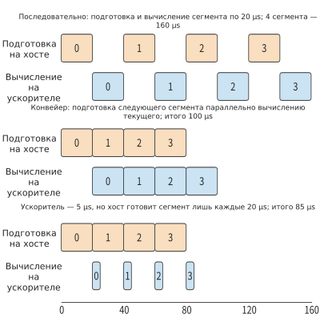
Рисунок 5-26. Подготовка каждого сегмента на хосте занимает 20 μs. При последовательном выполнении ресурсы двух типов работают по очереди; в конвейере хост подготавливает следующий сегмент, пока ускоритель вычисляет текущий, поэтому каждые 20 μs завершается один сегмент; после ускорения ускорителя до 5 μs каждому сегменту по-прежнему приходится ждать подготовки на хосте, поэтому большую часть времени ускоритель простаивает. На рисунке показаны только первые четыре сегмента, а в примере в тексте их 100.
Этот пример показывает два направления оптимизации хоста. Первое — сократить объём подготовки, например повторно использовать уже определённые формы и планы выполнения (заранее определённые с учётом длины запроса, размещения кэша и других условий выбор kernel, разбиение задач и организация рабочей области). Второе — перенести подготовку на время выполнения предыдущего сегмента на ускорителе, например асинхронно обрабатывать результаты предыдущего шага. Эти подходы соответственно уменьшают объём работы в конвейере и промежутки между этапами.
При авторегрессионной генерации возможность заблаговременной подготовки зависит от того, получены ли уже необходимые данные. Для вычислений на следующем шаге требуется токен, выбранный на предыдущем шаге; формирование batch, обновление состояния грамматики — отслеживание того, до какого места грамматики дошло соответствие уже сгенерированного содержимого при ограничении формата вывода — и проверка условия остановки также требуют соответствующих результатов. Среда выполнения может заранее выполнить работу, не зависящую от этих результатов, сократив ожидание между двумя вычислительными шагами. Развитие асинхронного выполнения и планирования в vLLM и других движках направлено на решение этой задачи.24
Когда специализированный ускоритель сокращает выполнение модели до времени, значительно меньшего, чем подготовка каждого шага на хосте, нижняя граница интервала между шагами устойчивого конвейера начинает определяться подготовкой на хосте. Чтобы дополнительно сократить этот интервал, необходимо совместно оптимизировать подготовку динамического batch — batch, в который на каждом шаге могут добавляться запросы или удаляться из него, — обновление адресов и отправку задач.
Выпущенная в сентябре 2024 года версия vLLM v0.6.0 служит примером ситуации, когда затраты хоста занимали основную часть интервала между шагами. Профилирование перед выпуском показало, что при запуске Llama 3 8B на одной H100 в пределах одного шага API-сервер занимал 33%, планирование — 29%, а выполнение на ускорителе — лишь 38%: API-сервер и движок инференса работали в одном процессе Python, их корутины конкурировали за GIL (глобальную блокировку интерпретатора), а ускорителю оставалось лишь простаивать в ожидании хоста. В v0.6.0 API-сервер перенесли в отдельный процесс, организовав обмен с движком через очередь сообщений, что позволило избежать конкуренции за GIL. Кроме того, было введено многошаговое планирование: после одного планирования последовательно выполнялось несколько шагов без повторной подготовки входных данных. Наконец, обработку вывода сделали асинхронной и перекрыли с выполнением следующего шага. В совокупности эти три изменения повысили пропускную способность Llama 3 8B в 2,7 раза относительно v0.5.3, а 70B — в 1,8 раза.23 Эти изменения не затронули ни одного kernel и не потребовали замены оборудования. Согласно критерию из раздела 1.3.4, когда накладные расходы программных абстракций на стороне хоста достигают 60% интервала между шагами, их устранение оказывается гораздо эффективнее замены ускорителя на более быстрый.
Подготовительную работу можно повторно использовать не только между соседними шагами одного запроса, но и между разными вызовами. Два вызова могут соответственно требовать от модели объяснить код и проверить тесты; содержимое входных данных различается, но они всё равно проходят через один и тот же набор слоёв модели. Если длина и batch находятся в диапазоне, поддерживаемом существующим планом выполнения, среда выполнения может повторно использовать программу, обновив токены, индексы позиций и адреса состояния; при появлении новой формы или пути управления она выбирает другой план выполнения. Приложение выражает изменения через контекст, а среда выполнения использует устойчивую структуру выполнения, чтобы сократить повторную подготовку. Далее отдельно рассчитаем пользу двух способов такого повторного использования: повторного воспроизведения графа и специализации по форме.
5.5.2 CUDA Graph: выигрыш при отправке и затраты на копирование входных данных¶
В предыдущем подразделе после ускорения GPU всё равно ожидал хост. Когда модель многократно выполняет похожую последовательность задач, значительную часть работы по отправке можно использовать повторно: сначала записать задачи ускорителя и зависимости между ними в граф, а затем многократно отправлять его на выполнение. При использовании CUDA Graph хосту достаточно каждый раз инициировать одно повторное воспроизведение графа, не подготавливая и не отправляя заново каждый kernel по отдельности. Ускоритель по-прежнему выполняет все узлы графа: сокращается именно повторяющаяся работа хоста. На рисунке 5-27 различие между двумя способами отправки показано на примере шести kernel одного FFN.
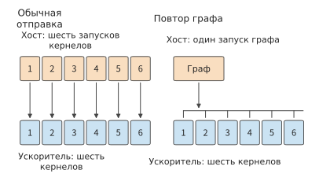
Рисунок 5-27. При обычной отправке хост выполняет отдельный launch для каждого kernel; при повторном воспроизведении графа хост выполняет только один graph launch, а ускоритель по-прежнему исполняет шесть записанных в графе kernel. Количество kernel сокращается посредством слияния, а не повторного воспроизведения графа.
На рисунке 5-28 для сравнения взяты три выполнения FFN. При обычной отправке выполняются 18 операций kernel launch на хосте и 18 kernel на ускорителе; при повторном воспроизведении графа вместо них выполняются три операции graph launch, но ускоритель по-прежнему исполняет 18 kernel. После слияния цепочки активаций число kernel на ускорителе уменьшается до 15; если затем применить повторное воспроизведение графа, хосту по-прежнему потребуются лишь три операции graph launch. Слияние объединяет вычисления нескольких операторов в одном kernel, а повторное воспроизведение графа сокращает работу хоста по подготовке и отправке отдельных задач.28
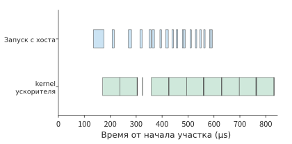
Рисунок 5-28. Измерения трёх выполнений FFN при обычной отправке. В верхней строке показаны вызовы API kernel launch на хосте, в нижней — kernel на ускорителе; время по горизонтальной оси отсчитывается от отмеченной начальной точки этого фрагмента. 18 операций kernel launch соответствуют 18 kernel на ускорителе.
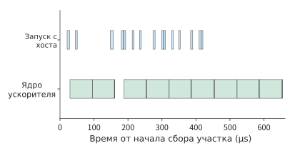
Рисунок 5-29. После слияния цепочек активаций в трёх выполнениях FFN хост выполняет 15 операций kernel launch, а ускоритель — соответствующие 15 kernel. Данные получены в отдельно отмеченном интервале сбора из того же эксперимента, что и на предыдущем рисунке.
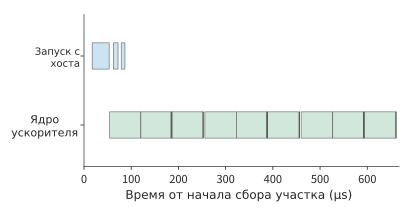
Рисунок 5-30. Три операции graph launch соответствуют 18 kernel на ускорителе. Повторное воспроизведение графа сокращает число отправок с хоста, но ускоритель по-прежнему выполняет все узлы исходного графа; на рисунке показано реальное время в пределах собственного интервала сбора.
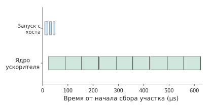
Рисунок 5-31. После слияния и последующего повторного воспроизведения хост трижды запускает граф, а ускоритель выполняет 15 kernel. Слияние сокращает число kernel на ускорителе, а повторное воспроизведение графа — число отправок с хоста.
Перед повторным воспроизведением графа новые входные данные необходимо разместить по записанным в нём адресам. В типичной реализации для графа резервируется фиксированный буфер, в который вышестоящий оператор при каждом выполнении записывает новые данные, а граф считывает их по записанным адресам. Если результат вышестоящего оператора находится в другом тензоре, перед выполнением графа добавляется копирование; если вышестоящий оператор записывает данные непосредственно в фиксированный буфер, это копирование можно исключить.
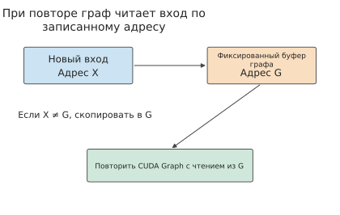
Рисунок 5-32. При выполнении граф считывает данные по записанному адресу G. Если новые входные данные находятся в X, они сначала копируются в G; если вышестоящий оператор записывает данные непосредственно в G, используется тот же буфер и промежуточное копирование не требуется.
Пример 5-11. Когда копирование входных данных сводит на нет выигрыш от повторного воспроизведения графа? При обычном выполнении вычисления на ускорителе занимают 20 μs, а ожидание ускорителем отправки задач с хоста — ещё 20 μs, итого 40 μs. Повторное воспроизведение графа и подготовка метаданных занимают 5 μs, а вычисления на ускорителе по-прежнему требуют 20 μs. Таким образом, граф изначально позволяет сэкономить 15 μs.
Пусть необходимые для выполнения графа входные данные BF16 имеют форму \([256,4096]\) и объём 2 MiB. При копировании одновременно выполняются чтение из источника и запись в назначение, поэтому суммарный объём чтения и записи составляет 4 MiB. При пропускной способности видеопамяти RTX PRO 6000, равной 1792 GB/s, которая совместно используется для чтения и записи, копирование занимает около 2,3 μs, а общее время выполнения графа — около 27,3 μs, то есть примерно на 12,7 μs меньше, чем при обычном выполнении.
Сохраним время вычисления и подготовки, но увеличим входные данные до 2048 строк, то есть до 16 MiB. Суммарный объём чтения и записи при копировании возрастёт до 32 MiB, а время — примерно до 18,7 μs; общее время выполнения графа составит около 43,7 μs. Теперь копирование занимает больше изначально сэкономленных 15 μs.
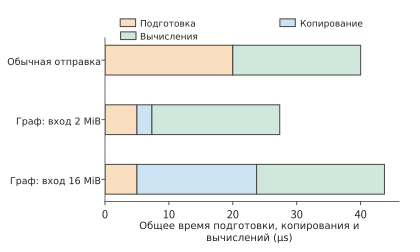
Рисунок 5-33. Оранжевым показана подготовка, синим — дополнительное копирование входных данных, зелёным — вычисления на ускорителе. Обычный способ занимает 40 μs; граф с входными данными объёмом 2 MiB — около 27 μs, а с 16 MiB — около 44 μs. Время копирования рассчитано по пропускной способности видеопамяти RTX PRO 6000, равной 1792 GB/s.
На рисунке 5-33 сэкономленное благодаря повторному воспроизведению графа время подготовки представляет собой отрезок фиксированной длины, а полоса времени копирования удлиняется с ростом входных данных. Когда их длины сравниваются, повторное воспроизведение графа перестаёт экономить время. Обозначим объём входных данных через X, а пропускную способность копирования — через B. Граф выполняется быстрее при условии \(2X/B<15\ \mathrm{\mu s}\). Подставив B=1792 GB/s, получим:
Объём 2 MiB ниже этого порога, а 16 MiB — выше. Затраты на копирование можно сократить, если предыдущий оператор будет записывать результат непосредственно в буфер графа либо если начать захват с места, где входной тензор меньше. Поэтому при выборе операций, включаемых в один граф, необходимо сопоставлять сэкономленное время отправки с хоста с дополнительным временем копирования входных данных.25
Повторное воспроизведение графа позволяет использовать последовательность отправки повторно; тот же принцип применим и к подготовительной работе, предшествующей созданию этих задач. Например, один план выполнения может совместно использоваться несколькими слоями модели. Библиотека операторов инференса FlashInfer разделяет построение плана (plan) и выполнение (run): plan выбирает kernel, разбивает работу на задачи, организует рабочую область с учётом длин запросов на текущем шаге и размещения KV в видеопамяти, а затем копирует эти метаданные на GPU; run выполняет внимание в соответствии с планом. На одном шаге длины запросов для всех 36 слоёв одинаковы, как и способ размещения KV, поэтому они могут использовать общий план. Если заново выполнять plan для каждого слоя, одна и та же подготовительная работа повторится 36 раз. В двух контрольных измерениях на RTX PRO 6000 переход к однократному выполнению plan сократил время 36 вызовов внимания примерно с 2,0 и 2,4 ms до 0,72 и 0,75 ms, а число копирований с хоста на GPU — со 144 до 4; число kernel на ускорителе не изменилось. Однако после изменения длины запроса plan необходимо выполнить заново: старый план будет считать по прежней длине и даст ошибочный результат.26
5.5.3 Динамические формы и затраты на компиляцию¶
Совместное использование плана несколькими слоями модели опирается на одинаковую структуру вычислений; для совместного использования скомпилированной программы разными вызовами необходимо также учитывать изменения формы входных данных. При изменении числа строк среда выполнения может выбрать один из трёх способов. Универсальная программа вычисляет индексы и границы по текущей форме; разбиение по корзинам дополняет входные данные до нескольких репрезентативных форм и повторно использует программы для этих форм; специализация использует известные условия входных данных для создания специализированных реализаций — здесь под этим понимается отдельная компиляция программы для каждой часто встречающейся формы. Чем полнее используются известные формы, тем больше возможностей упростить работу ускорителя, но тем больше программ приходится компилировать и хранить.
Пример 5-12. Сколько повторных выполнений требуется, чтобы специализация стала оправданной? Возьмём группу из 10 выполнений FFN: 8 по 256 строк, одно на 1536 строк и одно на 2048 строк, всего \(8\times256+1536+2048=5632\) строки. При использовании двух корзин на 512 и 2048 строк фактически обрабатывается \(8\times512+2048+2048=8192\) строки, то есть примерно на 45% больше. На рисунке 5-34 показано, до какой корзины дополняется каждая форма.
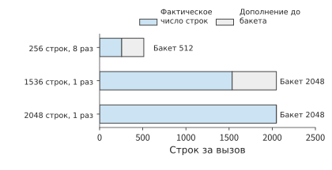
Рисунок 5-34. Вызовы на 256 строк дополняются до корзины на 512 строк, вызов на 1536 строк — до корзины на 2048 строк, а вызов на 2048 строк точно совпадает с границей корзины. Серым показаны дополнительные строки, обрабатываемые после дополнения; в 10 вызовах фактически содержится 5632 строки, но выполняется обработка 8192 строк.
Для трёх проекций полного FFN на каждую строку требуется суммарно \(6HF\) FLOPs. Предположим, что на RTX PRO 6000 универсальная реализация, реализация с корзинами и специализированная реализация достигают соответственно около 20%, 40% и 50% от пиковых 503,8 TFLOP/s для плотных вычислений BF16, то есть их MFU составляет 20%, 40% и 50%, а эффективная скорость матричной обработки — 100, 200 и 250 TFLOP/s. Тогда время одной группы составит соответственно около 17,0, 12,4 и 6,8 ms. Хотя при использовании корзин выполняется на 45% больше вычислений, скорость обработки удваивается, поэтому этот вариант всё равно быстрее универсальной реализации. Зададим время подготовки этих вариантов равным соответственно 100, 400 и 900 ms. Получим следующую таблицу.27
| Стратегия | Однократная подготовка P | Выполнение одной группы T | Способ обработки форм |
|---|---|---|---|
| Универсальная | 100 ms | 17,0 ms | Выполнение по фактическим 5632 строкам |
| Корзины | 400 ms | 12,4 ms | Дополнение до двух корзин, выполнение для 8192 строк |
| Специализация по каждой форме | 900 ms | 6,8 ms | Отдельная генерация программы для трёх форм |
Общее время выполнения r групп равно \(T_{\mathrm{total}}=P+rT\). На рисунке 5-35 точка пересечения каждой прямой с вертикальной осью обозначает время подготовки, а наклон — время выполнения одной группы. В этом примере чем быстрее вариант выполняет одну группу, тем меньше наклон прямой, но тем выше её начальная точка из-за более длительной подготовки.
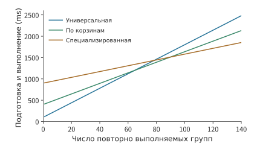
Рисунок 5-35. При многократном выполнении одной и той же группы вызовов наиболее быстрая стратегия меняется в зависимости от количества повторных использований. Кривые построены по формам, скоростям обработки и времени подготовки из примера 5-12; диапазоны целого числа вызовов, для которых применимы разные стратегии, рассчитаны по неокруглённым значениям. «Универсальная» стратегия использует один план выполнения для всех форм; «корзины» объединяют близкие формы в группы; «специализация» выбирает специализированный план для конкретной формы.
Подготовка варианта с корзинами занимает на 300 ms больше, чем универсального, но экономит около 4,6 ms на каждой группе, поэтому дополнительные затраты окупаются примерно после 65 групп. Подготовка специализированного варианта занимает ещё на 500 ms больше, чем варианта с корзинами, но экономит ещё около 5,6 ms на каждой группе, поэтому требуется около 90 групп. Расчёт по полным значениям показывает, что для 1–64 групп быстрее всего универсальный вариант, для 65–89 групп — вариант с корзинами, а начиная с 90 групп — специализированный.
Если экземпляр выполняет всего 70 групп, общее время трёх вариантов составит соответственно около 1,29, 1,27 и 1,38 s. Вариант с корзинами оказывается самым быстрым, поскольку экономия времени выполнения уже превысила дополнительные затраты на подготовку; хотя специализированный вариант выполняет каждую группу быстрее, накопленная экономия ещё не компенсирует дополнительную подготовку. Если программы всех трёх типов уже находятся в кэше и затраты на подготовку в этом вызове равны нулю, специализированный вариант будет самым быстрым с первой же группы. Таким образом, выбор, совершаемый средой выполнения, зависит одновременно от частоты форм и наличия уже скомпилированной программы в кэше.
Аналогично можно рассчитать, сколько вызовов требуется для окупаемости затрат на автоматическую настройку. Если поиск занимает 10 минут, а новая реализация экономит 5 μs на каждом вызове, то для компенсации времени поиска накопленной экономией потребуется \(600/(5\times10^{-6})=1.2\times10^8\) вызовов. При 10 000 вызовов в секунду это займёт около 3,3 часа, а при 100 вызовах в секунду — около 14 дней. Чем дольше выполняется настройка, тем важнее в первую очередь оптимизировать часто вызываемые и длительно используемые формы.
В главе 8 выбор и кэширование программ будут подробнее рассмотрены с учётом поступления запросов и динамической пакетной обработки. Если определённая форма многократно появляется за короткое время, сохранение соответствующего результата компиляции сокращает повторную подготовку; если форма долго не используется, её кэш можно удалить, освободив место для других форм.
5.5.4 Persistent Kernel: планирование задач по блокам данных¶
Повторное воспроизведение графа и кэширование программ сокращают повторную подготовку на хосте, но на ускорителе существует другой вид ожидания: если два kernel зависят друг от друга, второй обычно может начать работу только после полного завершения первого. Если второму оператору нужен лишь один блок результата первого, условие ожидания можно сузить до блока данных: как только рассчитан первый блок, для него сразу начинается последующая операция, а вычисление остальных блоков продолжается параллельно.
persistent kernel постоянно работает на ускорителе, извлекает задачи из очереди и по флагам завершения проверяет готовность необходимых данных. Это не только сокращает повторные операции kernel launch на хосте, но и позволяет перекрывать выполнение соседних операторов по блокам. Mirage Persistent Kernel (MPK) — исследовательская система, использующая такое планирование задач.30
Снова рассмотрим пример проекции up в Qwen3-8B с последующей активацией SiLU. Возьмём векторы признаков для 512 токенов и объединим в один блок векторы каждых 64 токенов, получив восемь блоков. Проекция каждого блока требует \(2\times64\times4096\times12288\approx6.44\) GFLOPs, что при пиковой производительности плотных вычислений BF16 на RTX PRO 6000, равной 503,8 TFLOP/s, занимает около 12,8 μs. При активации каждого блока обрабатывается \(64\times12288\) элементов BF16, причём для каждого элемента считывается 2 bytes и записывается 2 bytes; при пропускной способности видеопамяти 1792 GB/s это занимает около 1,76 μs. Предположим, что матричные и векторные ресурсы независимы, буферов достаточно, а каждая отдельная операция kernel launch с хоста занимает 5 μs. Если активация начинается лишь после завершения всех проекций, общее время равно \(2\times5+8\times(12.8+1.76)\approx126\) μs.
Теперь разобьём вычисления на восемь задач проекции и восемь задач активации. Перед началом каждая задача извлекается из общей очереди: выполняется атомарное сложение с возвратом значения для счётчика очереди, что требует примерно одного обращения к L2 туда и обратно и занимает 0,15 μs. После завершения публикуется флаг готовности — передача данных один к одному между SM, описанная в разделе 4.4.4, которая занимает 0,37 μs. Таким образом, проекция каждого блока требует около 13,3 μs, а активация — около 2,28 μs. Нужна лишь одна операция kernel launch; восемь блоков проекции выполняются последовательно без промежутков, активация каждого блока начинается сразу после завершения его проекции, а активация последнего блока завершается уже после всех проекций. Общее время равно \(5+8\times13.3+2.28\approx114\) μs, что даёт ускорение примерно в 1,1 раза.
Более медленный этап здесь — проекция. Экономия примерно в 12,6 μs складывается из двух составляющих: исключается одна операция kernel launch длительностью 5 μs, а активация семи блоков, занимающая около 12,3 μs, скрывается временем проекции. При этом накладные расходы задач возвращают в критический путь 4,7 μs. Активация одного блока занимает лишь 1,76 μs, поэтому её ранний запуск по блокам позволяет скрыть не больше этого времени. Чем ближе длительность двух этапов, тем больше времени экономится за счёт перекрытия по блокам; если один этап значительно длиннее другого, выигрыш практически сводится к исключению одной операции kernel launch.
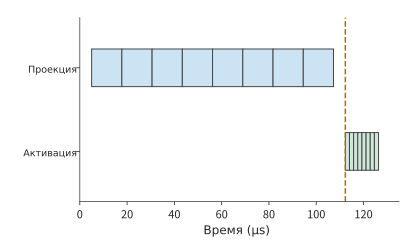
Рисунок 5-36. При крупнозернистом выполнении сначала завершаются проекции всех восьми блоков, после чего запускаются восемь активаций. При пиковой матричной производительности и пропускной способности видеопамяти RTX PRO 6000 проекция одного блока занимает около 12,8 μs, активация — около 1,76 μs, а каждая из двух операций kernel launch — 5 μs; вертикальная линия отмечает начало активации.
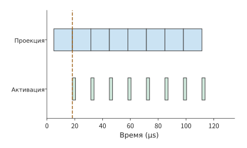
Рисунок 5-37. Матричные и векторные ресурсы независимы, буферов достаточно. Для каждой задачи дополнительно учитывается 0,52 μs на извлечение и уведомление; активация может начаться после завершения проекции первого блока. Проекции выполняются последовательно без промежутков, а активация ненадолго включается после проекции каждого блока; конвейер из восьми блоков завершается примерно за 114 μs.
Если проследить временную шкалу проекций на рисунке 5-37, видно, что восемь блоков проекции выполняются последовательно без промежутков. Здесь действует тот же принцип, что и при двойной буферизации: сначала завершается предыдущий этап для первого блока, после чего по одному блоку завершается с интервалом, равным времени более медленного этапа. Здесь медленнее проекция, подобно тому как в разделе 5.3.2 медленнее было перемещение; именно она определяет такт конвейера. Каждый слот буфера занят с начала проекции до завершения активации; если свободных слотов нет, задача проекции вынуждена ждать. Поэтому момент запуска следующего блока совместно определяется очередью задач, событиями завершения и наличием свободных буферов.
В предыдущем примере 5 μs — это стоимость отдельной отправки kernel с хоста. На стороне ускорителя сама граница между kernel значительно короче: на RTX PRO 6000 интервал между двумя пустыми kernel в CUDA Graph составляет около 430 ns, а при использовании PDL — около 370 ns, что сопоставимо с передачей один к одному между SM из раздела 4.4.4. persistent kernel исключает затраты на запуск, но обращения к L2 туда и обратно, необходимые для зависимостей, сохраняются.
При decode это проявляется ещё сильнее. Когда batch равен 1, каждое умножение матрицы на вектор распределяется по всем SM, а следующее умножение должно дождаться результатов от всех SM, поэтому каждая граница требует передачи между всеми SM. Рассмотрим проекцию BF16 размером \(4096\times4096\) в Qwen3-8B: 64 умножения образуют цепочку зависимостей, все веса считываются из видеопамяти, а веса для следующего умножения заранее загружаются в общую память. Без зависимостей каждое умножение занимает около 21 μs и ограничено пропускной способностью видеопамяти; после добавления зависимостей каждая граница добавляет 1,2–2,3 μs. Дополнительное время в основном расходуется на ожидание самого медленного SM, а не на саму передачу: каждый SM обрабатывает фиксированные 21 или 22 строки, при этом видеопамять обслуживает разные SM неравномерно, и предварительная загрузка скрывает лишь часть этого времени. Если вместо этого каждый SM при освобождении слота буфера получает следующую группу строк через счётчик, быстрые SM выполняют больше работы, а медленные — меньше; дополнительное время на каждой границе снижается до 0,74–1,06 μs, приближаясь к примерно 1 μs для передачи между всеми SM из раздела 4.4.4. Это стоимость самой зависимости, и изменение способа отправки не может её устранить.29
5.6 От локальной оптимизации к полному запросу¶
Каждая из рассмотренных выше оптимизаций имеет чёткий объект воздействия: разбиение на блоки сокращает повторное чтение входных данных, слияние сокращает промежуточные операции чтения и записи, а оптимизация среды выполнения уменьшает время подготовки и ожидания. Однако полный запрос включает и другую работу, поэтому локально сэкономленное время составляет лишь часть его общей длительности. В этом разделе сначала объясняется, как по локальному ускорению оценить время запроса, а затем разбирается реальный запрос Qwen3-8B.
5.6.1 Доля узкого места определяет потенциал ускорения¶
Пусть запрос состоит из последовательных этапов, время остальных этапов остаётся неизменным, доля узкого места в исходном времени равна f, а коэффициент его ускорения — s. Нормируем исходное время запроса к 1. Тогда новое время составит \((1-f)+f/s\), а общее ускорение:
Если узкое место занимает 20%, то после двукратного ускорения общее время станет равным \(0.8+0.2/2=0.9\), а коэффициент ускорения составит примерно 1,11. Если продолжить и ускорить узкое место в десять раз, общее время составит 0,82; даже если время узкого места уменьшится до нуля, остальные этапы всё равно потребуют 0,8 исходного общего времени, поэтому предельное общее ускорение равно 1,25 раза.
Это закон Амдала, представленный в главе 1. Он объясняет, почему отдача от оптимизации постепенно уменьшается: чем меньше времени занимает узкое место, тем выше доля остальных этапов в общем времени.
5.6.2 Параллельные ветви и смена критического пути¶
В соотношении Амдала время последовательных этапов складывается. Если две ветви запроса выполняются одновременно, после сокращения одной ветви может потребоваться ожидание другой; в таком случае нужно найти в графе зависимостей самый длинный путь, определяющий время завершения. Пусть после подготовки длительностью 10 μs одновременно запускаются узкое место A и ветвь B, занимающие соответственно 60 и 40 μs; завершающий этап занимает 10 μs и ожидает окончания обеих ветвей. Исходное время запроса:
Если ускорить A в четыре раза, до 15 μs, тогда как B по-прежнему занимает 40 μs, новое время составит \(10+\max(15,40)+10=60\) μs. Для A экономия равна 45 μs, но запрос сокращается лишь на 20 μs, поскольку B сменяет A на критическом пути.
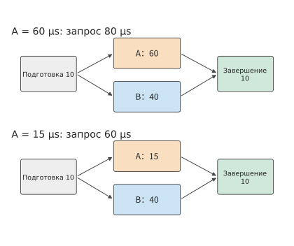
Рисунок 5-38. Завершающий этап ожидает обе ветви, A и B. После сокращения A с 60 до 15 μs более медленной становится ветвь B вместо A, а время запроса уменьшается с 80 до 60 μs. Подготовка и завершение занимают по 10 μs, две ветви используют независимые ресурсы.
Когда A сокращается до 40 μs, она завершается одновременно с B; если продолжать оптимизировать только A, время завершения останется равным 60 μs. Эта точка пересечения задаёт максимальную выгоду, которую можно получить от изолированной оптимизации A. Чтобы дополнительно сократить запрос, нужно оптимизировать B либо уменьшить время подготовки и завершения.
Общие ресурсы также могут изменить время выполнения самих ветвей. Предположим, новая реализация A интенсивно использует пропускную способность, из-за чего время параллельно выполняемой B увеличивается до 90 μs. Тогда время запроса составит \(10+\max(15,90)+10=110\) μs. Дополнительное время B превысит время вычислений, сэкономленное в A, и запрос в целом станет медленнее.31
Критический путь показывает, что время, сэкономленное в одной ветви, необходимо рассматривать в контексте всего графа зависимостей: только так можно определить, насколько ускорится запрос. Экономию памяти также нужно рассматривать в контексте всего процесса выполнения: уменьшение объёма, занимаемого состоянием, не обязательно равно сокращению числа байтов, считываемых на каждом шаге, поскольку объём чтения зависит от количества читающих его слоёв и от того, какие записи читает каждый слой. Для сессии V4.1 в разделе 2.3.6 уже приведён набор чисел для условия 8K: V4.1 позволяет 38 слоям глобального внимания совместно использовать 4 набора глобальных KV, благодаря чему резидентный объём снижается примерно до четверти от V4-Flash, однако логическое чтение по слоям сокращается лишь примерно на 9% и при этом превышает резидентный объём. Для общего состояния не нужно хранить отдельную копию на каждый слой, но каждый использующий его слой всё равно должен его читать, поэтому экономия объёма не превращается в равную ей экономию чтения.35
При увеличении контекста дополнительные накладные расходы также создаёт сканирование индекса, которое всё равно необходимо выполнять. При 128K объём логического чтения глобального исторического состояния и индекса у двух поколений моделей составляет соответственно примерно 65,085 и 33,422 MiB. В последующих слоях V4.1 индекс обращается только к пулу кандидатов, но начальный индекс всё равно должен обходить глобальные данные. Поэтому даже при фиксированной области доступа к индексу в последующих слоях затраты всего decode по-прежнему растут с длиной контекста.
На затраты влияет не только источник данных, но и то, действительно ли программа устраняет вычисления. Пул кандидатов сокращает область поиска в индексе для последующих слоёв, соответственно уменьшая объём работы. В открытой эталонной реализации сначала вычисляется скалярное произведение для полного кэша индекса, после чего маскируются позиции за пределами пула кандидатов; в описанной в статье производственной реализации непосредственно уменьшается число записей, сканируемых в индексе последующими слоями. В первом случае скалярные произведения за пределами пула уже вычислены, а во втором эта работа исключается ещё при запуске вычислений. Таким образом, одному и тому же правилу выбора соответствуют две разные стоимости выполнения.
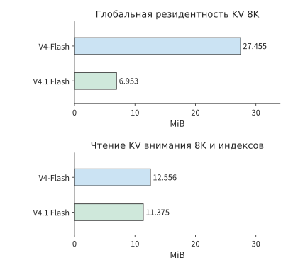
Рисунок 5-39. Глобальный резидентный объём и послойное логическое чтение сравниваются отдельно. В верхней части учитывается только объём глобальных KV, а чтение в нижней части включает глобальные записи, локальное окно и индекс; для двух столбцов используются одинаковые масштабы горизонтальной оси. Значения рассчитаны для производственной компоновки.
5.6.3 Комплексный пример: выбор оптимизаций для одного запроса Qwen3¶
Применим этот метод к Qwen3-8B на RTX PRO 6000. На вход запроса поступает 7239 токенов, генерируется 32 выходных токена, конкурентность равна 1, используются BF16 и выполнение eager; здесь eager означает, что хост последовательно, в порядке программы, отправляет задания ускорителю. Модель содержит 36 слоёв: сначала выполняется один prefill, формирующий первый выходной токен, а затем — 31 decode. В каждом слое на каждом шаге один раз выполняется активационная часть SwiGLU, то есть \(Z=\operatorname{SiLU}(G)\odot U\) из раздела 5.3.1. Всего получается \(36\times32=1152\) вызова: 36 для prefill и 1116 для decode.
Эти два вида вызовов выполняют разную работу. Prefill одного запроса применяет этот оператор к 7239 входным токенам в каждом из 36 слоёв модели, обрабатывая в общей сложности представления \(36\times7239=260604\) токенов; за 31 шаг decode в каждом слое обрабатывается один новый токен, что даёт \(36\times31=1116\) вызовов однотокенного оператора. Здесь работа оператора суммируется как «число слоёв × число токенов», поэтому один и тот же токен, участвующий в вычислениях разных слоёв, учитывается повторно. Число вызовов decode в 31 раз больше числа вызовов prefill, но число обрабатываемых строк намного меньше. Это именно то различие форм, которое неоднократно встречалось в этой главе: большие матрицы предоставляют больше параллельной работы, а для маленьких матриц время вычислений короче, накладные расходы на запуск ядра и распределение задач заметнее, и полностью загрузить ускоритель сложнее.
В том же движке SwiGLU во всех 36 слоях заменили ядром с другой схемой диспетчеризации. Запись выполнения подтвердила, что во всех 1152 вызовах использовалось заменённое ядро. Времена этапов приведены ниже.32
| Этап SwiGLU | Форма и количество вызовов | Исходное ядро | Заменённое ядро |
|---|---|---|---|
| Prefill | 7239 строк, 36 раз | около 11,2 ms | около 11,2 ms |
| Decode | 1 строка, 1116 раз | около 2,4 ms | около 0,92 ms |
Заменённое ядро главным образом сокращает время активации decode для однострочного входа: коэффициент ускорения составляет примерно 2,6, а суммарная экономия в части decode — около 1,45 ms. Время активации prefill практически не изменилось и после замены даже увеличилось примерно на 0,03 ms. Эти активации и прочая работа ускорителя в трассе выполняются последовательно. Все вычисления активаций исходным ядром занимают около 13,6 ms, то есть 1,6% от примерно 851 ms интервала сбора данных; если остальная работа не изменится, даже полное устранение всех вычислений активаций сэкономит не более 13,6 ms. Сейчас сокращена только часть decode, поэтому суммарное время всех вычислений активаций уменьшилось с 13,6 до 12,2 ms, а ожидаемое сокращение всего запроса составляет примерно 1,4 ms.
При чередующемся измерении запросов до и после замены на клиенте получено 11 пар результатов. Время до первого токена в обоих случаях составило около 436 ms, а медиана полного времени запроса — примерно 817 и 815 ms соответственно. Если для каждого раунда вычислить «время до замены минус время после замены», медиана парной разницы составит около 1,3 ms, или примерно 0,16% исходного времени запроса, что согласуется с ожидаемыми 1,4 ms. На рисунке 5-40 приведена разница для каждого раунда: в 9 парах после замены время сократилось, а в 2 — увеличилось.
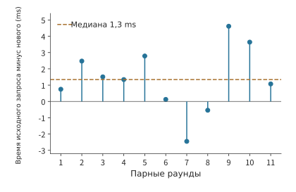
Рисунок 5-40. Время запроса до замены в том же раунде минус время после замены; положительное значение означает, что после замены запрос выполнялся быстрее. Qwen3-8B на RTX PRO 6000, вход из 7239 токенов, принудительный вывод 32 токенов, конкурентность 1, BF16, eager, кэш префиксов отключён; 11 пар чередующихся измерений, порядок внутри раунда случайный, во время измерений работали другие резидентные сервисы. Пунктирная линия обозначает медиану парной разницы времени, составляющую около 1,3 ms. Таблица этапов основана на отдельно собранной записи профилирования.
Улучшение decode происходит после первого выходного токена, поэтому в текущем запросе с длинным входом время до первого токена по-прежнему определяется вычислениями и ожиданием в prefill. Чем длиннее выходные данные, тем больше раз повторяются вычисления активации для однострочного входа и тем больше накапливается экономия времени на каждом шаге.
При анализе полного запроса сначала подсчитывают количество вызовов для каждой формы, затем вычисляют время, сэкономленное на каждом вызове, и наконец с учётом зависимостей определяют, может ли эта экономия сократить запрос целиком. Такой подход позволяет связать коэффициент ускорения ядра, длительность отдельных этапов и фактическое время ожидания пользователя.
Распространённые заблуждения¶
Заблуждение: стоимость выполнения можно оценить лишь по числу запусков kernel. Повторное воспроизведение графа сокращает количество отправок трёх FFN с хоста с 18 до 3, но ускоритель по-прежнему выполняет 18 запусков kernel; только слияние сокращает количество запусков kernel на ускорителе до 15. Отправки с хоста и вычисления на ускорителе следует рассматривать раздельно, каждое на собственной временной шкале.
Заблуждение: реализация с наименьшим объёмом обращений к памяти обязательно самая быстрая. При сокращении блоков K/V механизма внимания с 64 строк до 1 строки объём обращений уменьшается на 144 MiB, однако количество обновлений состояния возрастает примерно в 41 раз. Стоимость выполнения в совокупности определяется чтением, обновлением состояния и скоростью обработки матриц.
Заблуждение: увеличение числа буферов повышает пропускную способность. На одном SM H100 перенос каждого блока занимает 1,29 μs, а вычисление — 0,28 μs; двух слотов уже достаточно для непрерывной работы механизма переноса, и четыре блока обрабатываются за 5,44 μs. Третий слот не ускорит перенос, как не поможет и ускорение вычислений; чтобы сократить время, нужно уменьшить количество переносимых байтов на блок либо увеличить пропускную способность.
Заблуждение: если установившийся режим выполняется быстрее всего, то и общее время будет минимальным. При выполнении 70 групп вызовов разбиение по корзинам занимает около 1,27 s, а специализация для каждой формы — около 1,38 s. Каждая группа со специализацией выполняется быстрее, но выигрыш во времени пока недостаточен, чтобы компенсировать дополнительные затраты на подготовку.
Упражнения и сопутствующие эксперименты¶
В следующих заданиях условия примеров этой главы последовательно изменяются. Сначала выполните расчёты на бумаге, а затем объясните различия с помощью сопутствующего кода или журналов выполнения. Точки входа экспериментов сохраняют исходную нумерацию; конфигурации, порядок действий и полные журналы приведены в соответствующих материалах.
Эксперимент 5-1 · Расширенный: как размер матричного блока изменяет объём локального хранилища и чтения
Измените выходной блок в примере 5-3 на 64×128, сохранив размер блока редукции равным 32, и вычислите требуемый объём локального хранилища, количество чтений A и количество чтений W, а также общий объём обращений. Какой минимальной доли эффективной пропускной способности варианта 64×64 должен достичь вариант 64×128, чтобы время доступа к памяти стало меньше? Затем сравните журналы выполнения для двух порядков циклов и объясните, как последовательный доступ влияет на пропускную способность обработки.5
Эксперимент 5-2 · Основной: насколько слияние операторов активации сокращает обращения к памяти и потребление видеопамяти
Для цепочки активаций, в которой G и U занимают по 24 MiB, изобразите порядок выделения, использования и освобождения каждого тензора при раздельном выполнении трёх операторов и при их полном слиянии. Выведите объёмы обращений 156 MiB и 60 MiB, а также пиковое потребление видеопамяти в обоих вариантах. Если реализация со слиянием при каждом вызове добавляет фиксированные накладные расходы 5 μs, а пропускная способность интерфейса принимается равной пропускной способности видеопамяти RTX PRO 6000 — 1792 GB/s, то при каком минимальном числе входных строк экономия времени на обращениях к памяти превысит эти накладные расходы? Затем, опираясь на результаты сопутствующего эксперимента, объясните связь между долей сокращения объёма обращений и долей сокращения времени выполнения.7
Эксперимент 5-3 · Расширенный: как блочная редукция и предвыборка изменяют вычисление внимания и обращения к памяти
Добавьте ко входным данным примера 5-6 ещё один элемент с оценкой \(\ln4\) и соответствующим значением 5, затем обновите m, \(\ell\) и u и сравните результат с одновременной обработкой трёх элементов. Сохраните общую ёмкость буфера внимания равной 99 KB (101,376 байт), дополнительно выделив из него слот предвыборки BF16 размером b×d. При b=64 найдите новое максимальное число строк Q, количество проходов и объём обращений. Объясните, почему буфер предвыборки изменяет количество повторных чтений данных.11
Эксперимент 5-4 · Расширенный: изменяет ли слияние операторов результат вычислений или стоимость выполнения
В псевдокоде раздела 5.4.2 поочерёдно перенесите SiLU внутрь цикла ko, удалите промежуточное округление BF16 и переместите вычисление квантования внутрь цикла по каждому блоку выходных столбцов. Укажите, что именно изменяется в каждом случае: математические операции, численное округление или стоимость выполнения. Приведите входные данные, позволяющие различить результаты или объёмы обращений до и после изменения.19
Эксперимент 5-5 · Расширенный: как блочные циклы изменяют порядок доступа и временное хранение
Запишите блочный цикл i-k-j через номера блоков и координаты внутри блока, отметив в программе места создания, последнего использования и освобождения входного кэша и аккумулятора. Затем сопоставьте процессы выполнения сопутствующей программы транспонирования с двумя размерами блоков, сравните непрерывность доступа, операции синхронизации и объём временных данных и на этой основе объясните различие во времени выполнения.20
Эксперимент 5-6 · Расширенный: как доля вызовов для разных форм входных данных влияет на выгоду от оптимизации
Используйте две формы входных данных из примера 5-9. Примите долю вызовов формы A равной соответственно 1/2, 2/3 и 9/10 и вычислите среднее время исходной и новой реализаций. Если выбор реализации по форме добавляет 1 μs на каждый вызов, причём для A используется новая реализация, а для B — исходная, то при каких условиях этот подход лучше постоянного использования исходной реализации? Затем по сопутствующему журналу поиска подсчитайте его общую продолжительность и вычислите, сколько времени выполнения найденная реализация экономит при повторных вызовах.21
Эксперимент 5-7 · Расширенный: сколько повторных выполнений требуется, чтобы специализация стала выгодной
Изобразите полную временную шкалу подготовки и выполнения из примера 5-12. Измените число вызовов малой и средней форм в каждой группе с 8 на 4, сохранив по одному вызову для каждой из двух остальных форм. Попарно сравните три варианта и найдите для каждой пары число повторений, при котором их полное время совпадает. Затем предположите, что программы для двух корзин уже скомпилированы и закэшированы, и после изменения времени подготовки найдите диапазоны числа повторений, в которых каждый вариант обеспечивает минимальное полное время.27
Эксперимент 5-8 · Основной: какие накладные расходы сокращают воспроизведение графа и слияние операторов
Изучите рисунок 5-28 и отдельно подсчитайте для каждого из четырёх вариантов число отправок с хоста и количество kernel на ускорителе. Перенесите условия примера 5-11 на RTX 4090, приняв пропускную способность копирования равной пропускной способности его видеопамяти — 1008 GB/s, и найдите размер входных данных, при котором затраты на копирование в точности компенсируют время, сэкономленное воспроизведением графа. Затем организуйте прямую запись из вышестоящего этапа в буфер графа и сравните время завершения при обычной отправке и воспроизведении графа для входных данных размером 2 MiB и 16 MiB.28
Эксперимент 5-9 · Основной: как ускорение kernel изменяет задержку запроса и критический путь
По сопутствующим журналам 11 пар запросов сначала вычислите разность времени выполнения в каждой паре, а затем найдите медиану этих разностей. Объясните, чем она отличается от разности медиан времени выполнения, отдельно вычисленных для двух групп запросов. Используя условия комплексного примера этой главы и сохраняя prefill без изменений, увеличьте число шагов decode с 31 до 127. Предполагая неизменную экономию времени на каждом шаге, оцените общее время, которое удастся сэкономить на вычислении активаций. Затем постепенно сокращайте время выполнения A на рисунке 5-38 и найдите его значение, ниже которого полное время запроса больше не уменьшается.32
История и материалы для дальнейшего чтения¶
Halide разделяет алгоритм и планирование, превращая разбиение на блоки, переупорядочивание и выбор места вычисления в комбинируемые программистом действия; TVM связывает тензорные вычисления, генерацию кода для бэкендов и автоматическую настройку; AKG объединяет полиэдральное планирование, многоуровневое слияние и размещение в локальной памяти для генерации кода нейронных процессоров. Изучение первичных материалов по этим трём системам позволяет подробнее проследить, как способ представления влияет на преобразования, которые компилятор способен выполнять автоматически.1715
FPGA — программируемое логическое устройство, а высокоуровневый синтез (HLS) преобразует программы более высокого уровня в аппаратные тракты данных. Ранние работы автора с FPGA/HLS также прошли путь от обёртывания интерфейсов к преобразованию кода: для формирования требуемого конвейера необходимо было распознавать примитивы и зависимости чтения и записи, изменяя генерируемый тракт данных. Этот опыт показывает, что акцент исследований сместился с упрощения программирования на улучшение способа выполнения.
Система оптимизации оркестрации операторов Korch даёт ещё один показательный пример: в одном историческом случае подграф первоначально выполнялся тремя ядрами с суммарным временем около 91 μs; после перехода к четырём ядрам суммарное время составило около 69 μs. Повторное разбиение и объединение операторов сократили время выполнения на ускорителе настолько, что компенсировали дополнительные накладные расходы на запуск ядер и передачу данных.16 Вместе с приведённым в этой главе контрпримером для слияния это направление показывает, что при оптимизации следует сравнивать затраты всего процесса вычисления.
Итоги главы¶
В этой главе мы начали с одной матричной проекции, затем рассмотрели доступ к памяти, слияние операторов, компиляцию и среду выполнения, а в завершение проанализировали запрос целиком. Во всех разделах неоднократно использовались три основных принципа.
Во-первых, повторное использование требует пространства. Более крупный выходной tile позволяет одним и тем же входным данным участвовать в большем числе операций умножения-сложения, но требует больше памяти для аккумуляторов; сохранение результатов квантования позволяет нескольким блокам столбцов считывать данные меньшей разрядности, но также требует промежуточной памяти. Чтобы определить, оправданны ли эти затраты памяти, следует оценить, сколько повторных чтений или вычислений они устраняют. На SM объём этой памяти также определяет, сколько блоков потоков могут одновременно находиться на нём, а значит, сколько находящихся в обработке запросов к памяти способно скрывать задержку.
Во-вторых, зависимости по данным определяют порядок вычислений. Поэлементные операции можно выполнять сразу после подготовки входных данных для соответствующей позиции, тогда как редукции требуют сохранять частичные суммы или текущую статистику. Компилятор перемещает вычисления в соответствии с зависимостями, а среда выполнения с помощью событий определяет, готовы ли данные и можно ли освободить буфер. И слияние, и конвейеризация основаны на этих зависимостях.
В-третьих, общее время зависит от порядка выполнения всех работ. Пропускная способность определяет длительность передачи порции данных, более медленный этап — интервал завершения двух соседних блоков в конвейере, число повторных использований — смогут ли последующие сокращения времени выполнения компенсировать первоначальные затраты на подготовку, а критический путь — позволит ли локальное улучшение сократить время обработки запроса. Поэтому необходимо не только вычислить, какой объём работы удалось устранить, но и определить, влияла ли эта работа изначально на итоговое время завершения.
В следующей главе эти взаимосвязи будут распространены на несколько ускорителей. Момент готовности части результата, то, кому потребуется её прочитать, и срок её хранения определяют, когда начнётся обмен данными и сколько буферной памяти потребуется на обеих сторонах.
-
Фиксированная конфигурация Qwen3-8B; операторы модели и их реализации. ↩
-
Ёмкость блоков и повторное использование данных, включая подсчёт итераций циклов, дополнительные материалы по Orojenesis и отображение банков памяти. ↩
-
Повторный расчёт с плавающей точкой для разного числа частей и порядка объединения. Эта учебная строка получена по заданной формуле с последующим округлением до BF16 и не является полученной при измерениях активацией; каждый квадрат точно представим в FP32, а различия между путями обусловлены исключительно порядком сложения. Точное значение вычислено с помощью рациональных чисел и используется только как эталон для сравнения; перебор порядков объединения охватывает возможные последовательности атомарного сложения, но не представляет фактическое распределение какого-либо бэкенда. ↩
-
Трёхэтапное разбиение вычисления RMSNorm. Входные данные и gamma имеют формат BF16, gamma считывается для каждой строки; вариант «одна группа на строку» сохраняет входные данные, а трёхэтапный вариант повторно считывает их на этапе применения. ↩
-
Эксперимент 5-1, разбиение на блоки на GPU, разбиение редукции. ↩↩
-
Исходные условия, данные и анализ эксперимента 5-2. RTX PRO 6000, совместно используемый GPU, горячий кэш и воспроизведение графа; исходные медианы составили 14.20/7.68 μs, измерялась только подцепочка активации. ↩↩
-
Порядок потоковой обработки и бюджет буфера; перемещение на хост и время занятости буфера. ↩↩
-
Разбиение attention на блоки и онлайн-состояние; размер блока и объём обращений при буфере 99 KB. Модель ёмкости предполагает одну голову, отсутствие маски, повторное использование входного слота для K/V и временного слота для S/P; предел разделяемой памяти 99 KB на блок потоков взят из таблицы вычислительных возможностей руководства по программированию CUDA (столбец вычислительных возможностей 12.x). ↩
-
Эксперимент 5-3. Сравнение для одной головы на RTX PRO 6000 с горячим кэшем: 2.64 ms/79.5 μs; пиковый объём дополнительных выделений памяти — около 848/22.2 MiB, включая временную память, выделенную каждым бэкендом. ↩↩
-
Wang и др., TileLang: A Composable Tiled Programming Model for AI Systems, 2025. ↩
-
DeepSeek TileKernels, README, прочитано 30 сентября 2026 года. ↩
-
TileLang-Ascend, адаптеры Ascend C/PTO и AscendNPU IR, README, прочитано 30 сентября 2026 года. ↩
-
Zhao и др., 2021, AKG: Automatic Kernel Generation for Neural Processing Units using Polyhedral Transformations. ↩↩
-
Пример оркестрации Korch: подграф из статьи для V100/FP32; времена трёх ядер — 38.7, 24.2 и 28.2 μs, четырёх ядер — 7.6, 18.4, 7.5 и 35.7 μs. ↩
-
Допустимость слияния, округление FP8 и проекция квантования; изучение бэкенда RedFuser. В объёмы 444/620 MiB входят A, W и выходные данные; дополнительные операции чтения и записи построчного scale приведены в сопутствующем расчёте. ↩↩
-
Различия в компиляции, округлении и выполнении в эксперименте 5-4, подцепочка экспертов DeepSeek V4-Flash. ↩↩
-
Сгенерированный код и сравнение транспонирования в эксперименте 5-5. ↩↩
-
Журнал поиска и измерений эксперимента 5-6; расчёты для оценки и развёртывания. Зафиксированы два раунда, всего 12 вызовов агента; новых более быстрых реализаций получено не было. ↩↩
-
Исследование временной шкалы на хосте; конвейер конфигурации и выполнение графа. ↩
-
Архив объявления о выпуске vLLM v0.6.0; разбор атрибуции прироста см. в разделе 8.2 исследования стоимости токенов. Указанная в объявлении пропускная способность измерена при одновременном поступлении запросов и с параметром
--num-scheduler-steps 10; ускорение в 2.7 раза представляет собой совокупный эффект трёх изменений и не может быть полностью отнесено на счёт GIL. При низкой нагрузке многошаговое планирование может увеличить ожидание первого токена. ↩ -
Способ выполнения и обратная связь, эволюция фреймворка и разделы 7–8 исследования стоимости токенов. ↩
-
Копирование малых входных данных при воспроизведении графа, копирование больших входных данных и компромиссы при выполнении графа. Пропускная способность копирования определяется как трафик интерфейса, включающий чтение источника и запись назначения. ↩
-
Практическое измерение повторного использования плана FlashInfer. ↩
-
Полные входные данные и точки пересечения для специализации по форме. ↩↩
-
Измерения автора на RTX PRO 6000 Blackwell Workstation: раздел «Under a real weight stream» в описании измерений и выдержка числовых данных. Поочерёдно использовались 16 матриц размером \(4096\times4096\), всего 512 MiB, что в четыре раза превышает ёмкость L2; дополнительное время на каждой границе равно медианному времени каждого умножения в цепочке зависимостей за вычетом времени ядра той же структуры без зависимостей. Границы CUDA Graph и PDL измерялись с помощью пустого ядра; для фактического ядра также необходимо учитывать время завершения и подготовки. ↩
-
Организация задач на устройстве и MPK; расчёт для восьми блоков задач. Проекция вычислена исходя из пиковой производительности плотных вычислений BF16 на RTX PRO 6000, равной 503.8 TFLOP/s; активация — исходя из пропускной способности видеопамяти 1792 GB/s и 4 bytes трафика чтения и записи на элемент (448 G элементов/s). Оба значения взяты из таблицы оборудования; независимость ресурсов, накладные расходы задач и условия буферизации соответствуют условиям примера. ↩
-
Учебный расчёт критического пути запроса, сценарий конкуренции за ресурсы. ↩
-
Реализация ядра, журнал выполнения и 11 пар запросов в эксперименте 5-9. vLLM 0.23; заменяющее ядро использует планирование block256/4-warps, выходные токены совпали во всех 11 парах. Медианы на клиенте составили 816.640/815.406 ms, медиана парной разницы времени — 1.343 ms, медиана времени до первого токена — 435.674/436.353 ms. В отдельно собранном профиле производительности prefill составил 11.218659/11.244366 ms, decode — 2.369803/0.920376 ms. Время исходного ядра составило 13.588462 ms, после замены — 12.164742 ms, интервал сбора данных — 850.848989 ms; пересечение по времени между каждой горячей точкой и другой наблюдаемой работой GPU равно нулю. ↩↩
-
Резидентность на SM, скрытие задержки и число инструкций MMA, размещение аккумулятора в регистрах, задержка 1000 ns и две загрузки на warp. Ограничения SM взяты из таблицы вычислительных возможностей руководства по программированию CUDA (столбец вычислительных возможностей 9.0) и руководства по настройке Hopper, определение занятости — из раздела руководства по написанию ядер, сведения об асинхронном копировании, барьерах, распределении работы между warp и swizzle — из раздела об асинхронном копировании данных, значение 3.35 TB/s — со страницы продукта H100, а 132 SM и пиковая производительность плотных матричных вычислений BF16, равная 989.4 TFLOP/s, — из описания архитектуры H100 (таблица 3). Число регистров на поток, задержка видеопамяти, число незавершённых загрузок на warp, ширина загрузки и форма инструкции MMA — значения, выбранные в этом разделе. ↩
-
Модель выполнения CUDA; семантика синхронизации CUDA Runtime API; управление stream в CUDA и управление event; руководство PyTorch по закреплённой памяти и асинхронному копированию. О копировании на хосте и повторном использовании буферов см. также локальные расчётные материалы, цитируемые в этой главе. ↩↩
-
Официальный технический отчёт DeepSeek V4.1, разделы 1, 2, 3 и 6; фиксированные условия и повторный расчёт для межглавной сессии. ↩
-
В спецификации рабочей станции RTX PRO 6000 Blackwell системным интерфейсом указан PCIe 5.0 x16; согласно спецификации NVIDIA H100, пропускная способность PCIe Gen5 x16 составляет 128 GB/s суммарно в обоих направлениях, по 64 GB/s в каждом направлении. ↩
-
RTX PRO 6000 Blackwell использует архитектуру SM120 (см. среду выполнения эксперимента 5-2), то есть имеет вычислительные возможности 12.0; согласно таблице вычислительных возможностей руководства по программированию CUDA, в этом столбце верхний предел разделяемой памяти составляет 100 KB на SM и 99 KB на блок потоков, поэтому разница между ними соответствует резерву 1 KiB на блок. ↩